Firing and Draft Equipment
6
Learning Outcome
When you complete this learning material, you will be able to:
Explain the design, components, and auxiliary equipment of steam generator furnaces.
Learning Objectives
You will specifically be able to complete the following tasks:
- 1. Describe steam generator furnace designs including cyclone furnaces and divided furnaces. Explain the purpose and placement of furnace arches.
- 2. Explain the purpose and design of separately fired superheat and reheat furnaces.
- 3. Explain the purpose, types, characteristics, and placement of refractory in a furnace.
- 4. Describe the principle, design, and application of oil, gas, and coal burners.
- 5. Describe the principle, design, and application of pulverizers.
- 6. Describe the principle, design, and application of ash and slag disposal systems.
- 7. Explain the significance, monitoring, and control of ash fusion temperature.
- 8. Describe the designs and applications of forced and induced draft fans.
- 9. Explain the methods which control furnace draft.
Objective 1
Describe steam generator furnace designs including cyclone furnaces and divided furnaces. Explain the purpose and placement of furnace arches.
The terms steam boiler and steam generator are often used interchangeably. The term steam generator often refers to field erected boilers that have one or more superheaters and an economizer. This excludes firetube boilers and packaged watertube boilers (although many packaged boilers have economizers and superheaters). The furnace of a steam generator usually includes both a radiant section and a convection section. The radiant section contains the burners where combustion takes place and the heat transfer is predominantly by radiation. In subsequent passes, the fire is no longer within the line of sight. Radiated heat and luminescence are no longer present, and heat transfer is due to the convection of the heated gases.
Furnace design is dependent on the type and quality of the fuel, the method of burning the fuel, and the required heat release rate. Heat release requirements are a function of the steam evaporation rate, pressure, and temperature. Criteria for the design of a steam generator furnace are as follows:
- • Sufficient volume to contain a fire which releases enough heat to attain the design steam evaporation rate
- • Provision for heating of superheaters, reheaters, economizers, and air preheaters as needed
- • A geometry and size which maximizes the heat transfer surface
- • A gas flow velocity which allows for sufficient retention time for complete fuel combustion
- • A geometry and size, and gas flow velocity, which minimizes erosion of the pressure parts and fittings such as tubes, headers, ducting and refractory.
- • Provision for mounting of burners in sufficient size, number, and arrangement to provide the required heat release rate
- • Provision for effective cleaning of heat transfer surfaces using sootblowing, without allowing ash or slag to plug off any gas passages
- • Maximum thermal efficiency as measured by completeness of combustion and the lowest practical exit gas temperature
- • For solid fuels, a geometry and size which ensure that slag is deposited in the furnace prior to the gases entering the superheater. This requires that gas temperatures at the superheater inlet are below the ash fusion temperature.
Several of these criteria relate to the volume and linear dimensions of the furnace. Unused volume does not contribute to complete combustion, so the geometry of the furnace is almost as important a consideration as the size. As furnace size increases, the
volume increases in proportion to the cube of the linear dimensions, but the waterwall surface area increases only in proportion to the square of the dimensions. Heat release rates can become greater than the waterwall heat transfer capacity. Two solutions used in large steam generator design are:
- 1. to construct furnaces with a small cross section in relations to their height to increase combustion gas retention time
- 2. to use a centre wall of steam generating tubes to increase the heating surface area
Furnace size is the most important design consideration. Size impacts not just the heat transfer surface area but also the cost and complexity of requirements for structural steel, ground space, building and foundations, access stairs and flooring, sootblowers, ductwork, and piping for steam, water, and fuel. Solid fuels require larger furnaces than liquid or gaseous fuels. The required size of a solid fuel furnace increases as the fuel heating value decreases and/or its ash content increases.
Furnace design features other than size and dimensions affect the retention time of fuel and gas in the furnace. This is especially true for stoker-fed fuels such as coal, waste wood or hog fuel, municipal solid waste, and other biomass fuels. When stokers are used for solid fuel, arches at their discharge end, made of refractory bricks, are commonly used to restrict and control gas flow. Arches have the additional advantage of reflecting radiant heat towards the heat transfer surfaces. An ignition arch at the front of a stoker reflects heat onto the incoming fuel bed to preheat it prior to ignition.
Arches are prone to erosion and heat-induced spalling and are difficult to maintain. Constructing them in modules that can be individually replaced and suspending them solves this problem. Suspended arches are supported from steel frameworks that are anchored outside of the furnace, so the refractory does not have to support its own mass. Suspension fuel burning, which includes gas and liquid fuels as well as pulverized coal, does not require furnace arches.
Bending waterwall tubes inward to form a constricting throat controlling gas flow is a method sometimes used to form arches. The tubes can be bent inwards at a 45° angle at the bottom of the arch, and then bent outwards at its top at a 60° angle. This approach is also used in suspension fuel furnaces to form a slope at the top of the radiant section that increases gas velocity and reduces its pressure in order to facilitate the flow into the convection pass. Slopes are also used at the bottom of the radiant section and expose more heat transfer surface to radiant heat. Although refractory is still used to protect the tubes and seal the spaces between them, the need for refractory installation and maintenance is considerably reduced.
Although positive pressure furnaces are used, most steam generator furnaces operate at a pressure slightly below atmospheric. This prevents localized overheating due to furnace gas leakage, and permits the opening of observation or access doors with less danger. Pressurized furnaces are carefully sealed against leakage, and designed to maintain
tightness in spite of temperature changes. Burners and pulverizers are also designed for operation under pressure. Doors have aspirating or suctioning devices to prevent flame or hot gas from blowing out when they are opened.
“D” Type Steam Generators
In the “D” type watertube boiler, the steam and water drums are offset to one side, and the waterwalls are contoured into a “D” shape which contains the furnace. The burners are mounted horizontally on the front wall, making this a wall-fired or front-fired design. An alternative arrangement is to have burners installed on opposite walls, firing towards the centre, called an opposite-fired design.
The superheater, if fitted, is internal in the furnace between the steam generating tubes that make up the waterwalls. A variation on this design includes an external convection section with superheater elements, economizer, and possibly an air preheater. The basic layout of a Foster Wheeler E.S.D. II steam generator using this design is shown in Fig. 1. This model generates 90 000 kg/h of superheated steam at 5600 kPa and 515°C.
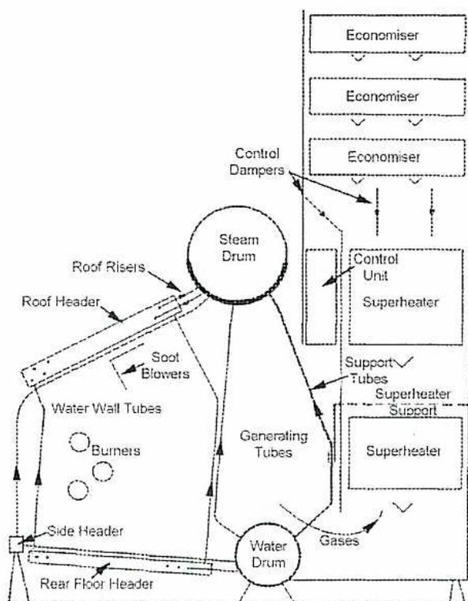
The diagram illustrates the internal structure of a Foster Wheeler E.S.D. II steam generator. On the left, a large furnace area contains three burners mounted on the front wall. Water wall tubes line the furnace walls, connected to a roof header and a rear floor header. Roof risers lead from the roof header to a steam drum located above the furnace. Generating tubes connect the water drum (located at the bottom right) to the steam drum. A control unit is positioned between the steam drum and the water drum. To the right of the furnace, a series of three economizers are stacked vertically, with control dampers between them. Below the economizers, there are two superheater sections, each with its own support tubes. Arrows indicate the flow of gases through the furnace and the convection section.
Figure 1
Foster Wheeler E.S.D. II Steam Generator
The boiler in Fig. 1 is an old and largely obsolete design, with square headers that are no longer used. However, this design is still in use in some plants, and shows many common features of steam generators of all sizes and types.
The furnace walls and the roof are composed of steam generating tubes, so the pressure parts form the furnace. This provides maximum heat transfer surface between hot combustion gases and the tubes for maximum heat transfer. All of the steam generating tubes in the furnace are riser tubes, with the heated water/steam mixture flowing upwards to the steam drum. Downcomers that are external to the furnace provide circulation from the steam drum to the water drum. The density of the water is greater than the steam/water mixture in the riser. The natural circulation ensures a continual supply of water to the steam generating tubes. As the water flows up the riser, it provides cooling for the tube metal to prevent overheating. The largest steam generators use centrifugal pumps to provide the forced circulation
For maximum thermal efficiency, heat continues to be extracted from the combustion gases after they leave the radiant furnace. They flow through the convection section and across banks of superheater and economizer tubes. Multiple stages of both steam superheating and feedwater preheating in the economizer are used. Gas flows across the superheater sections before reaching the economizer sections because the superheater requires a higher temperature than the economizer.
In this D type model, gas bypass dampers control the superheater steam temperature. The control unit shown in the gas bypass path is an additional economizer section.
A variation on the “D” type steam generator has the burners on the furnace roof rather than on the walls. This provides a longer gas path for better heat transfer and much longer flames. This is shown in Fig. 2, using a Foster Wheeler E.S.D. III as an example. Note that rows of vertical screen tubes spaced to allow the gases to pass through define the division between the radiant and convection sections. This is a common practice and increases the heat transfer surface of the furnace.
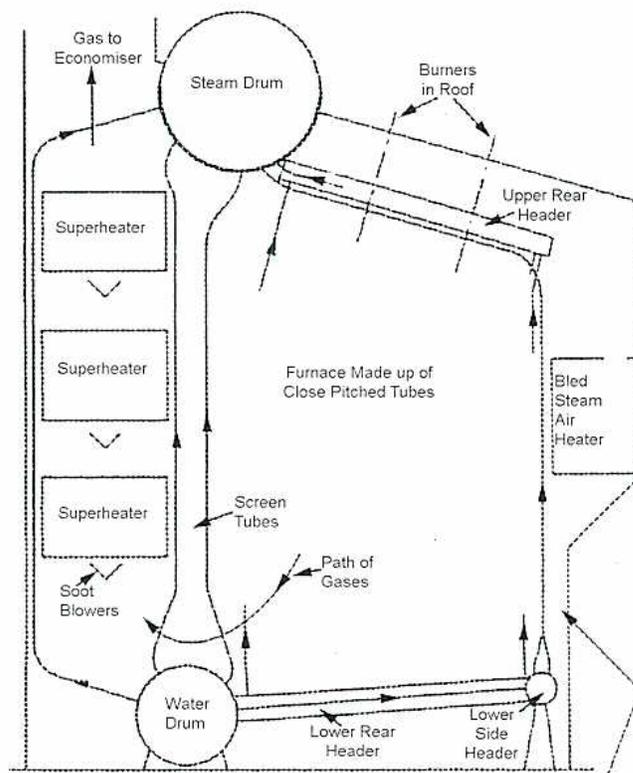
The diagram illustrates the internal components and gas flow of a Foster Wheeler E.S.D. III Steam Generator. At the top is a circular 'Steam Drum'. Below it, the 'Furnace Made up of Close Pitched Tubes' is shown. 'Burners in Roof' are located above the furnace. The 'Path of Gases' is indicated by arrows, showing a downward flow in the furnace and an upward flow in the convection section. On the left side, there are three 'Superheater' units and 'Soot Blowers'. At the bottom is a 'Water Drum'. 'Screen Tubes' are located between the furnace and the superheaters. 'Upper Rear Header' and 'Lower Rear Header' are also shown. A 'Bled Steam Air Heater' is located on the right side. The 'Gas to Economiser' outlet is at the top left.
Figure 2
Foster Wheeler E.S.D. III Steam Generator
This model produces up to 100 000 kg/h of superheated steam at 6 300 kPa and 515°C. When the required fuel piping is considered, roof-mounted burners can reduce the amount of floor space required although usually at the expense of additional required headroom.
Divisional Walls and Tangential Firing
The next step in steam generator evolution is the use of a divisional wall dividing the radiant and convection sections. The gas path is left open either above or below the divisional wall. The wall consists of steam generating tubes in a tangent tube or membrane wall construction. This is a gastight arrangement. Fig. 3 shows such a unit with roof-mounted burners. The gas path is downward in the radiant section and upward in the convection section.
![Diagram of a Steam Generator with Divisional Wall. The diagram shows a cross-section of a boiler system. At the top, a 'Steam Drum' is connected to 'Upper Headers'. 'Burners in Furnace Roof' are located above the 'Furnace' area. The 'Furnace' is bounded by 'Membrane Walls'. At the bottom, 'Lower Headers' are connected to a 'Steam Drum'. The 'Gases' flow path is indicated by arrows, moving from the furnace through various heating sections. On the right side, there are three main heating sections: an 'Economiser' (top), a 'Secondary Superheater' (middle, labeled 730°C), and a 'Primary Superheater' (bottom, labeled 920°C). Below the Primary Superheater, there is a 'Soot Blowers' section (labeled 1300°C). An additional 'Economiser' is shown at the top right, with 'Gases' exiting from it.](3121ebddccf183ca63bb9781be440a7e_img.jpg)
Figure 3
Steam Generator with Divisional Wall
Compared to earlier designs, this design offers the following advantages:
- • Higher efficiency
- • More complete combustion
- • Lower requirement for excess air
- • Increased transfer of radiant heat
- • Lowered requirement for refractory, using watertubes to form the divisional wall
- • Greater flexibility in fuel selection because slag formation on the refractory is not as much of a concern
This design includes steam generators sized up to 226 000 kg/h of superheated steam at 11 000 kPa and 538°C.
In this design, the steam drum is moved away from exposure to radiant heat. This protects it from overheating. In modern designs, the steam drum is not exposed directly to radiant energy.
Fig. 4 shows a steam generator with several differences from the design in Fig. 3. The gas path is upward in the radiant section and downward in the convection section. The burners are wall mounted near the bottom of the radiant section. In this case, the burners are mounted at the four corners of the furnace and angled slightly to produce a
horizontally circular, swirling fireball. Each burner contributes to the fireball at a tangent to its periphery. This is called tangential firing , and it results in thorough mixing of fuel and air immediately after the fuel is admitted to the furnace. The retention time of the fuel/air mixture is increased using this approach, reducing the required furnace size and increasing the heat transfer rate and efficiency. Tilting burners are often found in conjunction with tangential firing. A disadvantage is that this arrangement makes it difficult to utilize flame scanners.
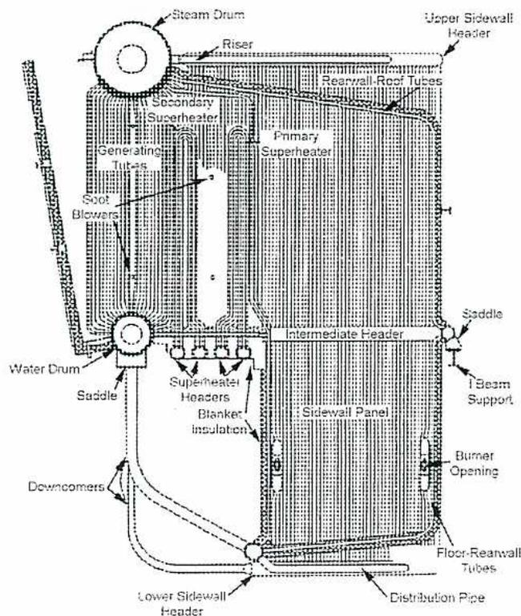
The diagram illustrates the internal structure of a tangential fired steam generator. At the top, a Steam Drum is connected to a Riser , which leads into the Upper Sidewall Header . Below this header are the Rearwall Roof Tubes . The furnace contains two superheaters: a Secondary Superheater on the left and a Primary Superheater on the right. To the left of the secondary superheater are the Generating Tubes . Soot Blowers are positioned within the furnace. A Water Drum is located at the bottom left, connected to the Lower Sidewall Header via Downcomers . The Lower Sidewall Header is connected to a Distribution Pipe , which leads to the Floor-Rearwall Tubes . An Intermediate Header is located in the middle of the furnace. Other components labeled include Saddle supports, Beam Support , Burner Opening , Sidewall Panel , and Blanket Insulation .
Figure 4
Tangential Fired Steam Generator
Fig. 5 illustrates the firing pattern in a tangentially fired furnace.
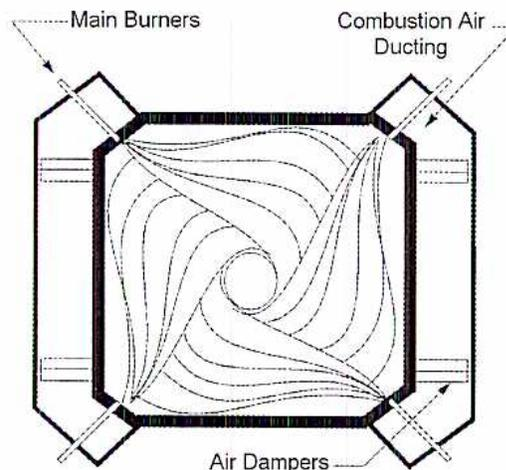
A plan view diagram of a square furnace. Four sets of ducts, labeled "Combustion Air Ducting", enter from the corners. Inside the furnace, curved lines represent the flow of combustion gases, showing a strong tangential (swirling) pattern. "Main Burners" are indicated at the corners where the ducts enter. "Air Dampers" are shown at the bottom corners of the furnace structure.
Figure 5
Tangential Firing
Steam generators have evolved and grown in size. Metallurgical advances and construction advances have made bigger sizes possible, as demands for industrial energy have grown. To minimize the unit's "footprint" (its requirement for floor space), larger steam generators tend to be tall and narrow. The advantages that divisional wall designs offer are improved combustion conditions, efficiency, and control. An example of an opposite-fired steam generator is shown in Fig. 6.
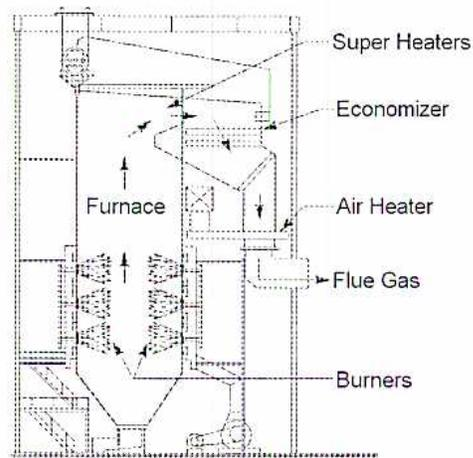
A cross-sectional diagram of a tall, narrow steam generator. The central "Furnace" has "Burners" at the bottom. Arrows show the upward flow of "Flue Gas" through the center. On the right side, there are several heat exchange components: an "Air Heater" near the bottom, an "Economizer" above it, and "Super Heaters" at the top. Arrows indicate the flow of water/steam through these components.
Figure 6
Opposite-fired Steam Generator
Fig. 7 shows a steam generator using pulverized coal for fuel. It is front fired with a primary convection superheater, secondary radiant superheater, and radiant reheater. Watertube arches are visible at the top and bottom of the radiant pass.
![A detailed cross-sectional diagram of a front-fired steam generator. The diagram shows the internal components of the boiler, including the furnace area at the bottom where pulverized fuel is burned. Above the furnace are several sets of heat-exchanging tubes: an Air Heater, an Economizer, a Primary Superheater Section, a Reheater, and a Secondary Superheater Section. Arrows indicate the flow of water/steam and the path of the hot combustion gases. A hopper for fuel is shown on the left side, connected to the pulverizers at the bottom.](cfef993dcc8fb513de79eb1f93cf26ae_img.jpg)
Figure 7
Front-fired Steam Generator
Cyclone Furnaces
A cyclone furnace is a horizontal cylinder cooled by steam generating tubes that are shaped around it. Cyclones are commonly used with solid fuels. Fuel is fed in at one end and mixed with heated primary air as it swirls through the length of the cyclone. Combustion occurs quickly at high temperature. Centrifugal force causes the solid fuel particles to migrate to the furnace wall. There, secondary air that is added at a tangent along the cylinder's length contacts the solid fuel particles. The hot combustion gases are discharged at the other end of the cylinder and in some applications may be mixed with tertiary air. The resulting molten ash and slag is allowed to run off in a stream from the discharge end. It is tapped from the bottom of the steam generator furnace in molten form and flows to a water filled slag tank. Figure 8 shows a cyclone furnace for hog fuel (bark) and coal.
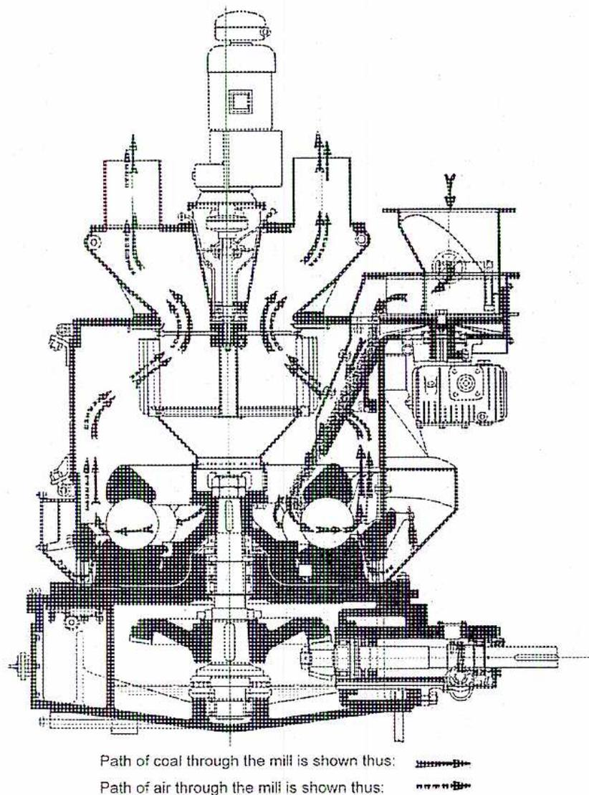
A schematic diagram of a cyclone furnace. At the top, a vertical pipe labeled 'Bark and Coal' enters the furnace chamber. On the left side, two air inlets are labeled 'Tertiary Air' and 'Primary Air'. At the top center, 'High Speed Secondary Air' is shown entering. The furnace chamber contains a swirling flow of fuel and air. On the right side, an outlet is labeled 'Hot Gases to Furnace'. At the bottom right, a collection area is labeled 'Molten Slag'.
Figure 8
Cyclone Furnace
An advantage of cyclone furnaces for coal firing is that the fuel and air are thoroughly mixed, and the coal does not have to be pulverized. It is usually crushed and fed to the furnace in sizes up to 6 mm. The turbulence of the cyclone ensures sufficient air/fuel contact for complete combustion. This means a major cost saving for equipment, maintenance, and power usage for pulverizing. Another advantage is that cyclones are operated with very low excess air due to the rapid mixing of fuel and air.
A limitation of cyclone furnaces is that they cannot be used with coal that softens at a temperature higher than approximately 1350°C because the resulting ash does not flow properly. The viscosity of the molten ash is a function of its chemical constituents. Some ashes do not flow properly regardless of the temperature.
A large Babcock and Wilcox steam generator with pressurized cyclone furnaces is shown in Fig. 9. This unit has a capacity of 454 500 kg/h of steam, at 12 070 kPa and superheated to 540°C. The reheater also has an exit steam temperature of 540°C.
![A detailed cross-sectional schematic of a large steam generator with cyclone furnaces. The diagram shows the internal structure of the boiler, including the furnace area at the bottom, the steam generation section in the middle, and the superheating section at the top. Key components labeled include Coal Silos, Feeder, Cyclone Furnace, Slag Tank, Primary Superheater, Reheat Superheater, Secondary Superheater, Attemperator, Air Heater, Gas Outlet, and Forced-Draft Fan. The diagram is a complex line drawing showing various pipes, valves, and structural elements.](af7916c89a458fdab6c3f443217388ae_img.jpg)
Figure 9
Large Steam Generator with Cyclone Furnaces
Divided Furnaces
With very large furnaces, it is a common practice to divide the furnace into two sections with a divisional waterwall across the centre. Draft and combustion are then controlled separately in each furnace half although care is taken to ensure fuel and airflows are balanced between them. The advantages of divided furnaces are:
- • Easier to control draft, airflow, and turbulence in a smaller volume
- • Safer containment of the fireball because it is divided in two
A disadvantage is that sootblowers are unable to clean the divisional wall except at its outer ends.
Fluidized Bed Furnaces
Furnaces for fluidized bed steam generators are similar in design to a conventional furnace, with the following differences:
- • A distributor plate separates the windbox from the bottom of the furnace which ensures that combustion air is distributed evenly throughout the bed. Depending on the design, 50 – 100% of the combustion air enters the furnace through the distributor plate. It is often constructed of a membrane waterwall panel with a series of bubble caps to ensure uniform distribution. This is shown in Fig. 10.
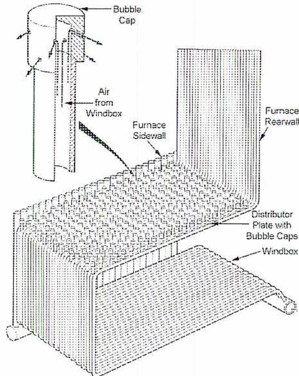
A 3D perspective diagram of a fluidized bed furnace. At the bottom, a rectangular windbox is shown. Above it is a distributor plate, which is part of a membrane waterwall system. The plate is perforated with numerous bubble caps. An arrow labeled 'Air from Windbox' points upwards through these caps into the furnace chamber. The furnace chamber is bounded by a 'Furnace Sidewall' on the left and a 'Furnace Rearwall' on the right. Both walls are lined with vertical tubes, representing the membrane waterwall. A detailed inset at the top left shows a cross-section of a single bubble cap, with arrows indicating the upward flow of air from the windbox, through the cap, and into the fluidized bed above.
Figure 10
Distributor Plate and Bubble Caps
- • In most cases, the combustion air not distributed through the distribution plate is added to the burning fuel as secondary air from above. It is injected at high velocity through overfire nozzles to ensure the air penetrates and mixes with the fuel bed. This helps to reduce emissions of \( \text{NO}_x \) .
- • The waterwalls in the lower portion of the furnace are usually covered with a thin layer of refractory to protect them from erosion and corrosion due to contact with the fluidized bed.
Objective 2
Explain the purpose and design of separately fired superheat and reheat furnaces.
Single or multiple boilers can supply saturated steam to a single superheater which has its own dedicated furnace. This approach gives precise control of superheat temperature.
Conventional superheaters within a steam generator are less expensive to operate because they use heat that would otherwise be lost to the stack. Fired superheaters can be less expensive to erect because one of them can replace conventional superheaters in several steam generators. However, because fuel costs are the main economic driver, this is not usually an economical approach to take and is rarely seen. Similarly, a separately fired reheater can offer very precise reheat temperature control for use in turbines that have very little tolerance for temperature deviation. This is rarely economical in practice.
Applications of fired superheaters include the following:
- • Industrial processes where tolerance for temperature variation is low
- • Industrial processes where steam temperatures up to 650°C are required, that cannot be attained in a conventional steam generator
- • Retrofitting of plants where the original boilers installed produce either saturated steam or steam with a lower degree of superheat than is now required. This may be required in plant expansions that create longer steam distribution lines, thus creating a greater risk of condensation forming in the piping.
A specialized use of fired superheaters is seen in some designs of nuclear power plants where circulating the coolant water transfers heat from the nuclear reactor to a boiler. If the coolant cannot be elevated to a sufficiently high temperature to produce the required degree of superheat in the boiler, an additional superheating stage is required.
Fired superheaters have the following design characteristics:
- • Compliance with codes and standards as a fired boiler, including compliance with the ASME Boiler and Pressure Vessel Code Section I
- • Superheater tubes in the form of coils within the furnace
- • High capacity factors due to varying requirements for process demands. The design capacity will be 35 – 50% higher than the projected maximum demand.
- • Refractory brick lined furnaces because there are no watertubes to cool the furnace
- • Combustion controls that control the firing rate to regulate steam temperature rather than steam pressure
- • Forced or balanced draft systems, forced draft is more common.
A fired superheater is often constructed in an “L” shape with the burner and furnace in the horizontal section, and the superheater tubes in the vertical section. In this way, the superheater becomes a convection superheater and is not directly exposed to radiant heat transfer.
When a fired superheater is used, its flue gas is often exhausted to a waste heat boiler to improve the thermal efficiency and economy of operation. In some cases, no separately fired boiler is used. This arrangement provides the steam temperature control of a fired superheater without the cost of firing two furnaces. However, this approach makes it difficult to regulate the steam flow as demands change because steam temperature controls the firing rate, and there is no combustion control that responds to steam pressure or flow.
Objective 3
Explain the purpose, types, characteristics, and placement of refractory in a furnace.
REFRACTORY
Refractory, in the simplest terms, is a material that can retain its shape and strength at high temperatures. The term usually refers to specific materials used as furnace linings and in furnace construction to provide thermal insulation and erosion protection.
Refractory is composed of natural clays (firebrick) or synthetic ceramic materials, primarily metal oxides that have very high melting and spalling temperatures. The metal oxides are able to withstand furnace temperatures without damage. Examples of such materials are alumina ( \( Al_2O_3 \) ), silica ( \( SiO_2 \) ), and magnesia ( \( MgO \) ). Alumina and silica produce “acid” refractories and magnesia produces a “basic” refractory. Basic refractory is less common, more expensive, and less resistant to thermal shock and erosion, but it is better suited to withstanding corrosion due to alkali metal compounds in ash. It is more often found in process furnaces than in boiler furnaces. Alumina has a low porosity which makes it very durable. It is used in amounts from 60% to 90% of the total refractory composition to extend the material’s life. This advantage is offset by alumina’s high cost compared to silica.
Refractory is available as bricks, plastics, or castable refractory, all of which are rigid when applied and cured. Bricks, in various sizes and shapes, are bound and cured into their cast brick shape with calcium cement or a binding containing phosphoric acid. They are usually placed in a furnace without any mortar or adhesive to hold them together and provide excellent protection against erosion and corrosion due to their dense, non-porous nature. Plastic refractory uses a binder that produces a plastic material that can be applied to various irregular shapes. It is used where brick cannot be easily used. It is then hardened or “set” using air and heat. Metal and ceramic anchors are used to hold this material in place after application.
Castable refractory is an inexpensive form and is sold as a dry powder, ready to be mixed with water and applied by pouring or by pressure applicators. Castable refractory has the least resistance to erosion and corrosion, but it is the best thermal insulator of the hard refractory types.
Refractory is also sold in a “soft” form consisting of ceramic fibres in the form of blankets, boards, or soft blocks which remain flexible in service. They are lighter in weight, more resistant to rapid temperature changes, and better thermal insulators than hard refractories. They are less resistant to erosion and corrosion.
The use of refractory as a furnace lining material has the following advantages:
- • Steel components are insulated from furnace temperatures to protect them from overheating
- • It reduces excessive heat transfer through the furnace casing avoiding an excessively high external temperature. This ensures personnel comfort and safety.
- • It minimizes heat loss from the furnace enhancing combustion efficiency
Refractory is also used at various locations in a furnace to protect steel components from overheating and erosion due to flue gases passing over them.
Refractory is placed and shaped with consideration for possible damage. Some types are more susceptible than others to overheating and to spalling, in which the surface layers are made brittle and eventually crack and fall apart. Excessively high temperatures and thermal shock caused by sudden temperature changes both cause spalling.
Other factors that reduce refractory life are flame impingement, impingement by hot liquid and acid corrosion when the furnace gas temperature drops below the acid dew point. Refractory is kept out of the direct path of the flue gases, wherever possible, to minimize erosion.
Objective 4
Describe the principle, design, and application of oil, gas, and coal burners.
BASIC PRINCIPLES
A burner facilitates a controlled exothermic oxidation reaction. In other words, a burner accepts an input of fuel, and produces an output of heat and other combustion products as the fuel is burned. To achieve this, there are three basic design considerations:
- • A need for controlled mixing of fuel and air
- • A need for a stable and self-renewing flame
- • A controlled combustion region or controllable flame shape
These design considerations address the three T's of combustion:
- • Turbulence, to ensure mixing of the fuel and air
- • Temperature, sufficient to ensure combustion (oxidation) of the fuel
- • Time, for the combustion reaction to reach completion
Burners for boilers are specialized due to the demands of specialized fuels, air emission requirements, and increased efficiencies required due to fuel costs. A burner is designed with the following factors in mind:
- • Fuel(s) to be used
- • Rate of heat release
- • Fuel pressure, if a liquid or gaseous fuel is used
- • Pressure of the atomizing medium, if a liquid fuel is to be atomized
- • Fuel temperature
- • Combustion air pressure
- • Combustion air temperature
- • Furnace temperature
- • Furnace size and dimensions
- • Shape and configuration of the flame
These factors give rise to the five Ms of burner design and function:
- • Metering of fuel and air
- • Mixing of fuel and air
- • Maintaining a continuous ignition zone for stable combustion
- • Molding the flame to the proper shape
- • Minimizing emissions
Metering
The metering function for boilers with multiple burners requires that the burner inlet be orificed to regulate the amount of fuel allowed to flow. This ensures different burners have the fuel distributed uniformly among them. For gaseous fuels, the metering orifice is often used in conjunction with a venturi eductor that entrains combustion air and provides a fuel premix. This is shown in Figure 11.
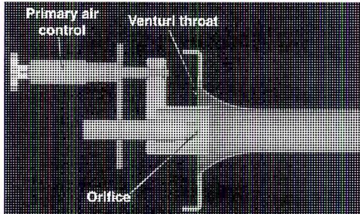
A schematic diagram of a gas premix metering orifice and air mixer. It shows a horizontal fuel line with an 'Orifice' plate. Air is drawn from the top through a 'Primary air control' valve into a mixing chamber. The fuel passes through the orifice into this chamber. The mixed fuel-air stream then exits through a 'Venturi throat' which narrows and then widens again.
Figure 11
Gas Premix Metering Orifice and Air Mixer
For liquid fuels, the metering orifice is often combined with a section that allows an atomizing medium, such as steam or air, to be mixed with the fuel. The burner outlet then includes a spray nozzle in the tip. Design of the atomization process is dependent on the following:
- • Relationship between fuel temperature and viscosity
- • Temperature of the atomizing medium
- • Relationship between fuel pressure and atomizing medium pressure
- • Relationship between fuel temperature and degree of atomization
Mixing
Fuel/air mixing require turbulence in the burner. The more thoroughly mixed the fuel and air are, the faster and higher temperature the combustion will be. Flame shaping and emissions requirements may limit the optimum level of mixing. Burners are often designed for reduced mixing or delayed combustion to reduce NO x emissions.
There are four methods of mixing fuel and air:
- • Entrainment - The velocity energy of the fuel stream is used to entrain air that is directed into it. Less commonly, the air's velocity energy may be used to entrain fuel.
- • Co-flow mixing - This is achieved with air and fuel streams that are parallel and laminar. Turbulence exists in a shallow layer at the interface between them. The turbulence slowly mixes the two streams together.
- • Cross flow mixing - Separate streams are directed into one another rather than being parallel.
- • Flow streamline disruption (eddy formation) - Obstructions or expansions are used to disrupt the fluid flow, causing turbulence and mixing.
Combustion of both oil and gas involves the burning of hydrocarbons. The degree, effectiveness, and timing of the mixing of air with the fuel strongly influence the manner in which combustion takes place. If the fuel and air are allowed to mix before reaching the ignition zone and are heated together so that the oxygen has time to penetrate the hydrocarbon molecules, the process is called hydroxylation . The compounds formed burn with an almost colourless blue flame and no free carbon is formed in the process.
If the air and gas streams are separate until the ignition zone is reached, the mixture attains correct combustion proportion suddenly and starts to burn rapidly in close proximity to the cold gas stream. The result is called cracking or thermal decomposition, in which the hydrocarbons tend to break down into the basic components, carbon and hydrogen. The cracking action liberates hydrogen which burns in the flame. The carbon particles glow incandescently making the flame yellow and brightly luminous.
In practice, both hydroxylation and cracking are present in all hydrocarbon flames although gas flames are predominantly hydroxylative and oil flames rely predominantly on cracking.
Maintaining Ignition
The base of a stable flame is always visible at the burner exit. Unstable flames pulse, or are detached from the burner. Instability creates a risk of extinguishing the flame and allowing unburned fuel to enter the hot furnace risking a potential explosion.
Maintaining ignition for a stable flame depends on a burner design that does the following:
- • Defines a definite location for the flame (the ignition zone )
- • Continuously introduces a well mixed fuel/air mixture in nearly stoichiometric proportions
- • Maintains a fuel/air velocity which does not exceed the flame propagation speed of the mixture
Because of these requirements, burners are designed for specific fuels and ranges of operating conditions and cannot be used safely outside their specified ranges.
Certain features are commonly used to control ignition zone placement and fuel/air velocity. They include:
- • A step, or ledge, in the inner periphery of the burner or in the tiles at its exit as shown in Fig. 12. Tapering of the burner tile exit is also used.
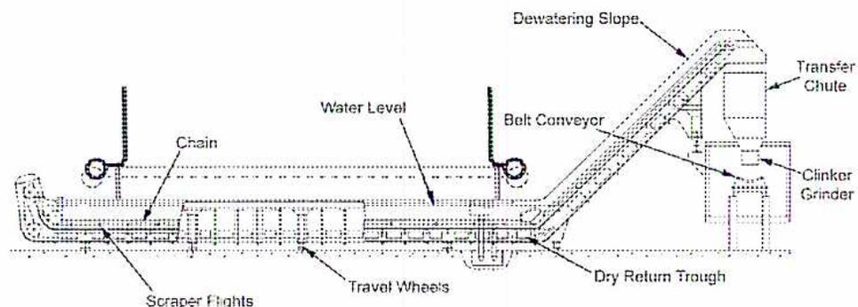
Figure 12
Burner with Ledge
- • A flame stabilizer or flame holder centred in the fuel/air stream is shown in Figure 13. This type of device takes advantage of the aerodynamic qualities of the fuel/air mixture to shape and place the downstream ignition zone.
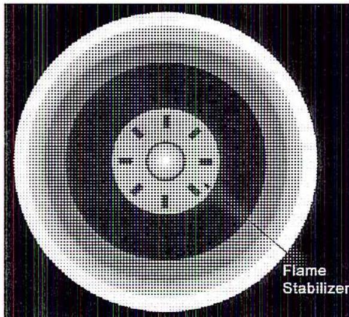
Figure 13
Flame stabilizer
- • A swirl plate (swirler), diffuser, or impellor is shown in Fig. 14. This device reverses a portion of the flow, increasing the turbulence. It also draws in some of the downstream combustion gases. These recirculated gases increase the fuel temperature to improve combustion.
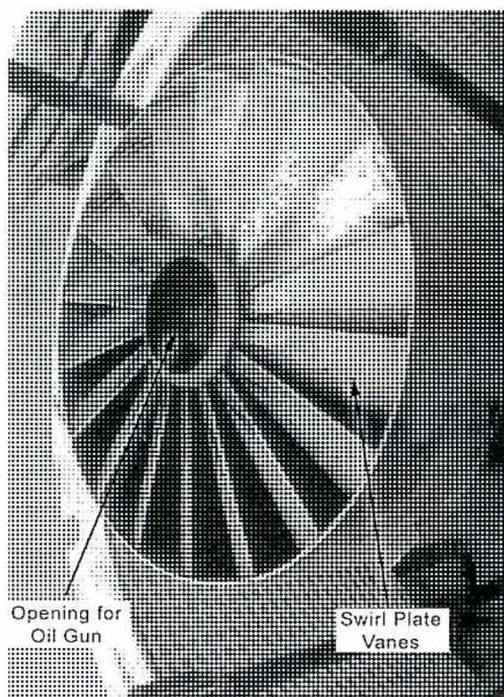
Figure 14
Swirl Plate
A common type of burner is shown in Figure 15. It uses an integral swirler with air doors that are intended to control the swirl. The air doors (also called vanes, dampers or louvers) are often used to control the airflow distribution for multiple burners. The swirl can be controlled to match operating conditions.
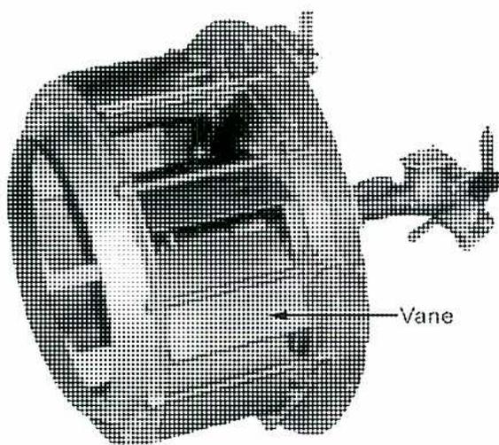
Figure 15
Swirl Burner
An improvement on the swirl burner is the axial flow burner where air is introduced axially along the burner, and the swirler does not need to be adjusted to control airflow. Louvers may be used to control airflow, but they are located in the boiler windbox upstream of the burner. It is important to distinguish between louvered burners and burner, or boiler, louvers. An axial flow oil burner is shown in Figure 16.
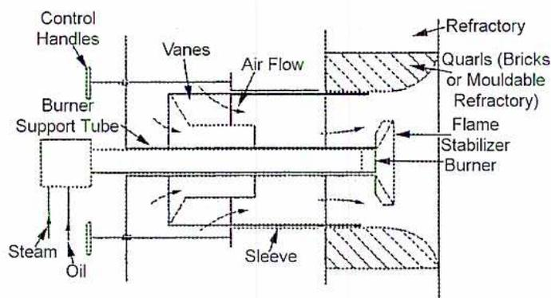
The diagram illustrates the internal structure of an axial flow burner. On the left, a 'Control Handle' is connected to a 'Burner Support Tube'. Inside the burner, 'Vanes' are positioned to direct 'Air Flow' axially. Fuel is introduced through a central tube, with 'Oil' and 'Steam' indicated at the bottom left. The burner assembly is surrounded by a 'Sleeve'. At the exit, a 'Flame Stabilizer' is located, and the burner is housed within a 'Refractory' material, which is further lined with 'Quarls (Bricks or Mouldable Refractory)'.
Figure 16
Axial Flow Burner
An advantage of an axial flow burner is that only the primary air passes through the swirler. The secondary air is introduced along the periphery of the burner, so it is not swirled. A swirl burner passes all the air through the swirler diluting the fuel and producing a high excess oxygen content of the swirled fuel/air mixture at low loads, typically 11% to 13%. This fuel dilution reduces flame stability and limits the range of loads at which the burner can be safely operated.
Moulding the Flame Shape
The width and length of a flame affects the completeness of combustion and the heat transfer rate between the furnace and the boiler tubes. The length of the flame is also controlled to prevent its impingement on refractory or steel. Proper moulding is therefore very important for safe, efficient operation
Flame shape is partially a function of the number of burners in use and their placement relative to each other. Burner design selection reflects these factors.
The devices that fix the location of the ignition zone also help to shape the flame and are designed for both purposes. The shaping of the burner and its exit passage also controls flame shape. Often, a combination of a flame holder to shape the airflow and a specially shaped injector, called a spud , cane , or tip , are used to shape the fuel flow. Fig. 17 illustrates some typical gas tips, and Fig. 18 shows typical oil tips.
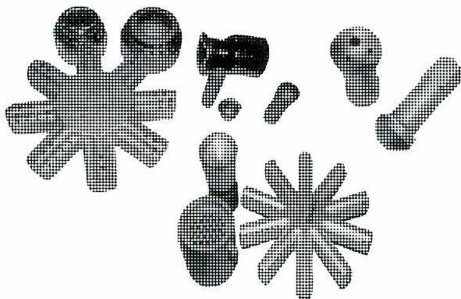
Figure 17
Gas Burner Tips
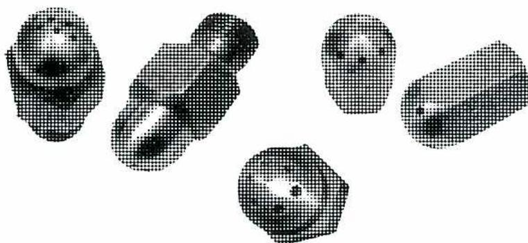
Figure 18
Oil Burner Tips
Round flame burners are common for process heaters and furnaces because of their shorter flame which matches the shape and size of the furnaces used for petrochemical processes. A disadvantage of a round flame is its higher NO x emissions.
Flat, or fan-shaped, flames are preferable when boiler or process tubes are close to the burner, or for wall-mounted burners.
Minimizing Emissions
The need to reduce NO x emissions is one of the most important considerations in burner design, especially for retrofits. To achieve this, combustion is often staged or conducted in multiple steps which reduces flame temperature and thus reduces NO x . This is done by controlling the injection of fuel into the air stream ( fuel staging ), or of air into the fuel stream ( air staging ), at two or three locations. This is done with venturi eductor sections in the burner rather than a single point of fuel/air mixing. For example, primary air is often admitted radially, producing a swirl in the fuel/air stream that a swirler emphasizes.
Secondary air is added downstream in a similar fashion, and tertiary air may be admitted at the burner throat. Gas fuel is admitted through a poker, ring, or orificed pipe and oil is atomized and injected through a steam or mechanical atomizer. This is shown in Figs. 19 and 20.
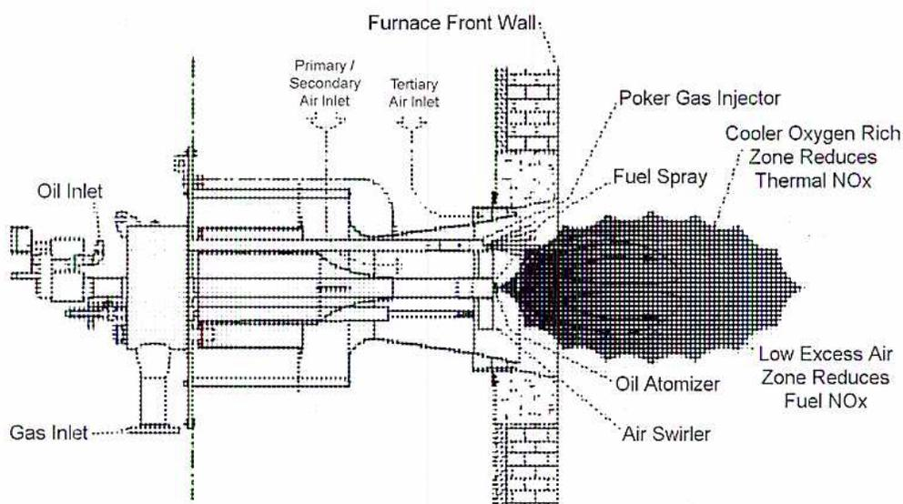
A cross-sectional diagram of a Venturi-type low NO
xburner. On the left, a 'Gas Inlet' enters a venturi section. Above the venturi are 'Primary / Secondary Air Inlet' and 'Tertiary Air Inlet'. An 'Oil Inlet' leads to an 'Oil Atomizer' located at the throat of the venturi. The venturi narrows and then widens before exiting through a 'Furnace Front Wall'. Inside the furnace, a 'Poker Gas Injector' is shown. The fuel spray from the atomizer is depicted as a dark, expanding cloud. Labels indicate a 'Cooler Oxygen Rich Zone Reduces Thermal NO
x' at the top of the spray and a 'Low Excess Air Zone Reduces Fuel NO
x' at the bottom. An 'Air Swirler' is located at the exit of the venturi.
Figure 19
Venturi Type Low NO
x
Burner
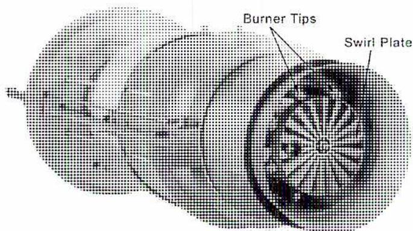
An end-view diagram of the Venturi-type low NO
xburner. It shows a circular 'Swirl Plate' with radial vanes. In the center of the swirl plate are 'Burner Tips'. The diagram illustrates the flow pattern of the burner, with a central jet and surrounding swirl flow.
Figure 20
Venturi Type Low NO
x
Burner
Another approach is to design a staged burner for internal staging of the flame itself. The flame is stratified into layers that are alternately fuel-rich and oxygen-rich. The fuel-rich portions produce less NO x , and the reducing environment also destroys NO x that was created in the adjacent oxidizing environments. Unburned fuel from the fuel-rich portions of the flame migrates to the fuel-lean areas to achieve complete combustion.
Over-fire air jets mounted above the burners add air to a fuel-rich environment to achieve air staging. This type of staged combustion can also be achieved through the burner
operating strategy rather than through the design of individual burners. Biasing the burner control system so that burners at a lower elevation are operated fuel-rich while upper burners are operated fuel-lean produces a staged combustion effect. Operating the upper burners with no fuel, but with airflow, effectively simulates the use of over-fire jets. This approach is called Burners-Out-Of-Service (BOOS.)
NO x emissions can also be reduced using flue gas recirculation (FGR.) It was mentioned earlier that recirculating hot combustion gases into the flame to raise the fuel temperature improves flame stability. A recirculating fan draws cooler flue gases from the economizer outlet and recirculates them into the airflow prior to combustion. The cooler flue gases reduce the flame temperature and reduce NO x production. Flue gas can be added to the combustion air as follows:
- • Internally within the burner
- • Through slots in the vicinity of the burner
- • Through over-fire ports above the ignition zone
- • Through furnace wall ports
- • Premixing through a perforated pipe, or sparger, upstream of the windbox (referred to as premix FGR)
- • Mixing at the burner exit (referred to as plenum FGR)
- • Premixing with gaseous fuel (referred to as fuel dilution)
There are disadvantages to the use of FGR for NO x reduction. Recirculation of more than 20% of the flue gas alters the boiler heat balance, often raising superheater and reheater temperatures significantly. FGR fan power usage reduces boiler thermal efficiency by as much as 0.05% for each 1% of recirculation. Depending on the FGR method used and the boiler design and characteristics, flame instability and boiler vibration occur with recirculation rates as low as 14% although it is possible to go as high as 70% with no ill effects. For these reasons, FGR for NO x control is usually only found on new installations where the boiler and burners have been designed with this concept in mind.
Fig. 21 illustrates a low NO x burner for packaged boilers, which utilizes several of the concepts discussed here. This is a dual fuel venturi burner with two stage fuel staging for the gas fuel. Three-stage air staging is used, with an axial flow design and a swirler for the primary and secondary air only. Flue gas recirculation is achieved internally.
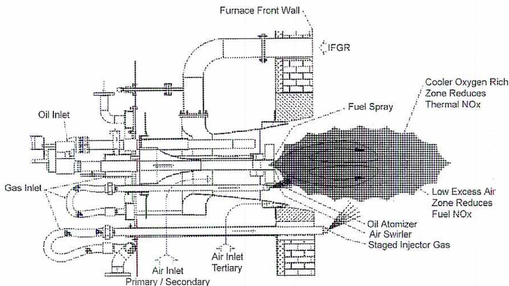
A detailed schematic diagram of the Todd Combustion Low NO x Burner. The diagram shows a cross-section of the burner assembly within a furnace. Key components labeled include:
- Furnace Front Wall : The boundary of the furnace chamber.
- IFGR : Internal Flue Gas Recirculation, shown as a duct returning exhaust to the combustion zone.
- Oil Inlet and Gas Inlet : Entry points for fuel.
- Air Inlet , divided into Primary / Secondary and Tertiary streams.
- Fuel Spray : The atomized fuel entering the combustion zone.
- Cooler Oxygen Rich Zone Reduces Thermal NO x : A specific region in the combustion zone.
- Low Excess Air Zone Reduces Fuel NO x : Another region in the combustion zone.
- Oil Atomizer , Air Swirler , and Staged Injector Gas : Components at the burner exit to facilitate mixing and combustion.
Figure 21
Todd Combustion Low NO
x
Burner
Ultra low emissions burners have extremely low NO x emissions without staging. This is done using very rapid mixing of fuel with axial flow air and premix FGR at or near the burner exit. This achieves a nearly uniform fuel/air mix, with very rapid complete combustion, and negates any need for reduced excess oxygen. In fact, higher airflows are used to increase the excess oxygen because of its cooling effect on the flame. An example of such a burner is shown in Fig. 22.
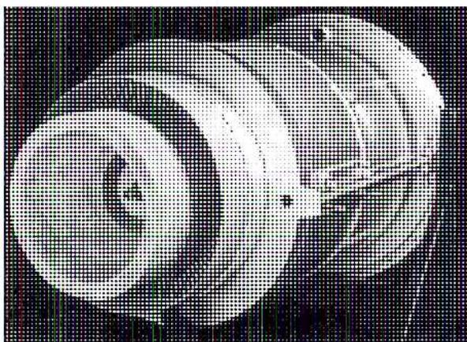
A photograph showing the cross-section of an Ultra-Low Emissions Burner. It features a central fuel injection port surrounded by multiple concentric rings and slots designed for the rapid mixing of fuel with axial flow air and premix flue gas recirculation (FGR) at the burner exit.
Figure 22
Ultra-Low Emissions Burner
BURNER TYPES
Burners are often classified by the type of fuel they are used for. For each type of fuel there are also numerous types of burners.
Gas Burners
The simplest gas burners are atmospheric burners which use the momentum of the incoming gas stream to draw in, or aspirate, part of the required combustion air. A shutter or vane regulates the amount of air that is used. The gas/air mixture passes through a tube leading to the burner ports, mixing in the process. Secondary air is drawn into the flame. A large burner may have many ports arranged in a ring or sectional construction, or numerous smaller single port burners may be used. A single port atmospheric burner is shown in Fig. 23.
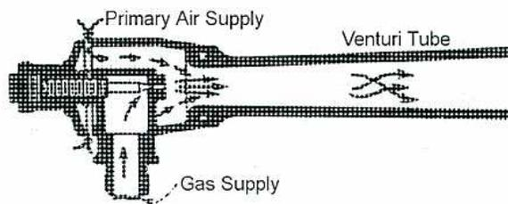
A cross-sectional diagram of an atmospheric gas burner. On the left, a vertical 'Gas Supply' pipe enters and connects to a horizontal mixing tube. Above the gas supply, a 'Primary Air Supply' inlet is shown with arrows indicating air being drawn into the mixing tube. The mixing tube extends to the right and is labeled 'Venturi Tube'. Inside the tube, there are arrows representing the flow of the gas/air mixture towards the burner ports at the far right.
Figure 23
Atmospheric Gas Burner
The amount of primary air aspirated into the gas stream determines the premix percentage and the nature of the flame. This is essentially fixed in an atmospheric burner. With a low premix, hydroxylation is predominant and the flame is long and pale blue. It may have a yellow tip indicating some hydrocarbon cracking and the presence of free carbon. Increasing the primary air shortens the flame as burning becomes more rapid, and a greenish inner cone appears. It is possible for the flame to flashback , or burn back in the mixing tube. This can happen when the speed of burning, or flame propagation , exceeds the velocity of the gas flowing from the port. Operation is generally satisfactory with 30 – 70% premix although as much as 100% is used in special burner designs. Some burners aspirate the premix air in two steps by passing high-pressure gas through two venturi eductor sections in series.
The amount of secondary air drawn in from around the burner depends on the opening area and the furnace draft. Adjusting the secondary air shutters or varying the draft controls the airflow. Fig. 24 shows a typical round flame premix gas burner for installation in a furnace or heater floor.
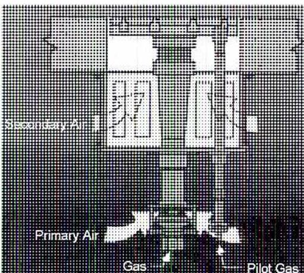
A schematic diagram of a premix gas burner. At the bottom, three input lines are labeled 'Gas', 'Pilot Gas', and 'Primary Air'. These enter a mixing chamber. Above the chamber is a shutter labeled 'Secondary Air'. The burner head is shown at the top, with a flame emerging from it.
Figure 24
Premix Gas Burner
A variation of the atmospheric burner is the fan-mix burner in which gas issues from angled jets in a rotating spider. Reaction force then spins the spider and its connected fan. Air is drawn in through a shutter, and the turbulent interaction of gas jets and air stream thoroughly mixes the gas and air. This is shown in Fig. 25.
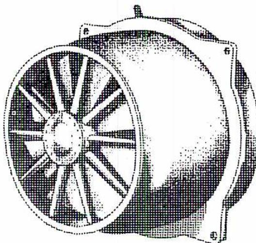
A perspective drawing of a fan-mix burner. It consists of a circular housing with a shutter on the side. Inside, a spider assembly with multiple angled gas jets is connected to a fan. The assembly is shown in a slightly offset position to illustrate the internal components.
Figure 25
Fan-Mix Burner
Another type of burner used for boiler operation is the refractory burner . It depends on furnace draft to aspirate all of the air required for combustion. Fig. 26 shows how multiple gas jets discharge into the air stream in a short mixing tube or tunnel made of refractory. This is done in such a way that turbulent agitation results.
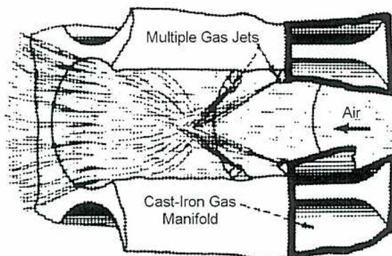
Figure 26
Refractory Burner
Fig. 27 illustrates how turbulence vanes are used to impart a swirling motion to the air entering the tunnel. Each small jet of gas is entrained into the air and impinges against the tunnel walls.
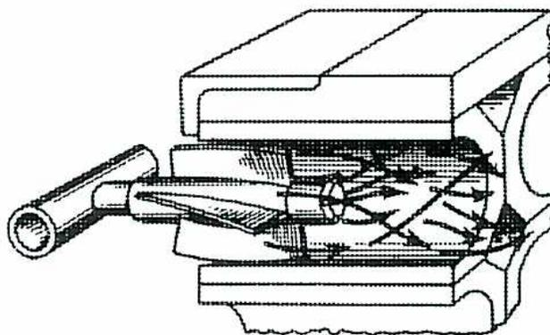
Figure 27
Turbulence Vanes
Fig. 28 shows the fully assembled burner with vertical manifolds connecting horizontal tubes which control individual gas orifices. It has 15 tunnel blocks that form the complete burner. Louvers in front of the burner assembly control air admission. Each orifice discharges into a refractory tunnel. The tunnel aids in heating the mixture prior to ignition and protects metal burner parts from high temperatures. The flame can be made relatively luminous for high radiant heat transfer rates.
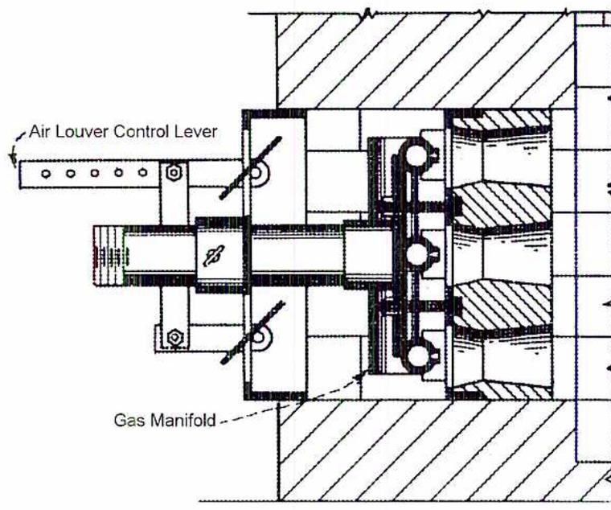
Figure 28
Refractory Burner Assembly
Oil Burners
Liquid fuels such as oil require a means of atomizing the fuel within the burner. Atomizing means the liquid is broken into fine droplets to maximize its surface area and its contact with the combustion air. The oil exits the burner in a fan or cone-shaped spray of droplets. The atomizer, along with the fuel and air mixing apparatus and swirler, is contained in a single assembly called an oil gun. It can be removed from the burner for cleaning or servicing. An example is shown in Fig. 29.
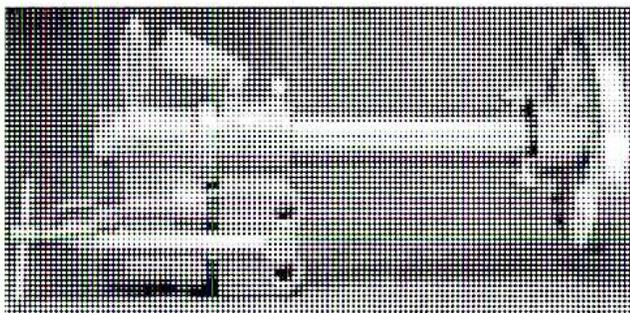
Figure 29
Oil Gun
Classes of atomizers include:
- • Mechanical
- • Dual fluid
- • Rotary cup
Mechanical, or pressure jet, atomizers include simplex and spill return types. The operating range is small, with a typical turndown ratio of 2:1, as the quality of the atomization drops off quickly as load is reduced. A simplex atomizer is shown in Fig. 30. Oil is introduced at a pressure of 800 – 2500 kPa to ports or slots that are arranged tangentially around a central chamber. This causes the oil to swirl in the chamber at high velocity. The chamber's outlet is a sharp-edged orifice, and the oil is forced to exit in droplet form. This is a simple, low maintenance, and rugged design, but it is limited in output.
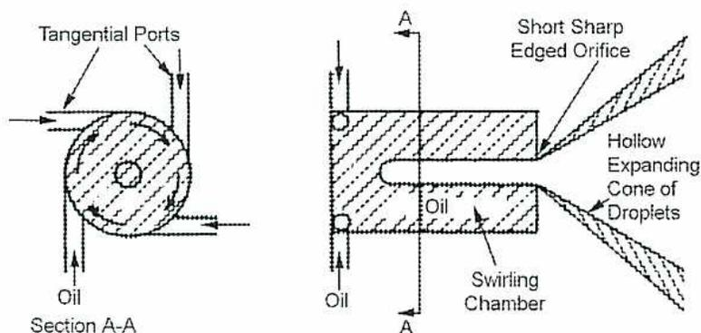
Figure 30
Simplex Atomizer
A spill return atomizer is similar, but some oil drains from the atomizer back to the oil gun inlet and the pumping system. An example is shown in Fig. 31. The operating range is increased to a 4:1 turndown ratio because adjusting the amount of oil spill controls the firing rate. This type of atomizer is often used in special burner designs to increase combustion efficiency and reduce NO x .
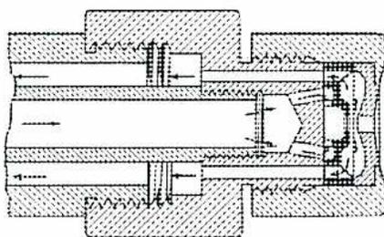
Figure 31
Spill return Atomizer
Mechanical atomizers depend on the pressure drop across the tangential ports to increase the oil velocity, affecting the droplet size. This limits their capacity because there is a limit to the pressure to which oil pumps can raise each type of oil. One method of addressing this limitation is to use a constant delivery pressure feature in a spill return atomizer. Spill rate is used to control pressure drop rather than throughput, giving a much higher turndown ratio.
Another variation uses a plunger which opens additional tangential ports as oil pressure is increased. Pressure drop is held constant, and adjusting the oil supply pressure controls the firing rate, as shown in Fig. 32.
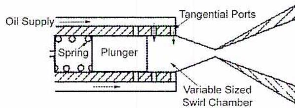
The diagram illustrates a cross-section of a plunger atomizer. On the left, an 'Oil Supply' inlet leads into a chamber. A 'Plunger' is positioned within this chamber, held back by a 'Spring'. As the plunger moves to the right, it opens 'Tangential Ports' which allow oil to enter a 'Variable Sized Swirl Chamber'. From this chamber, the oil is forced through a nozzle, creating a conical spray pattern. Arrows indicate the direction of oil flow from the supply, through the ports, into the swirl chamber, and out through the nozzle.
Figure 32
Plunger Atomizer
Dual fluid atomizers include external and internal mix types. Very fine, consistent atomization is possible, but an atomizing medium such as compressed air or steam is required. If steam is used, it is approximately 2% of the steam produced although the possible range is 1 – 5%. Steam is commonly used, admitted at 500 – 1000 kPa through nozzles at a tangent to a jet of oil. It breaks up the oil stream as it leaves the burner. The steam's energy also assists in forcing the steam/oil mixture through the atomizer nozzle. Steam atomization is suited to burning almost any fuel oil of any viscosity, at almost any temperature. When compressed air is used it is normally mixed into the oil inside the burner.
An external mix atomizer is shown in Fig. 33. Oil reaches the tip through a central passage with the screw spindle, shown at the right, which regulates the flow. Oil whirls outward against a sprayer plate to break it up at right angles to the stream of steam or air which exits behind it. The atomizing stream surrounds the oil chamber and receives a whirling motion from vanes in its path. Combustion air enters through a register, shown in the bottom part of the illustration. The register is adjustable to control excess air.
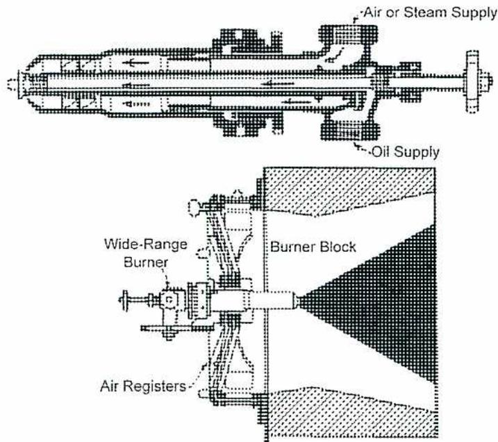
Figure 33
External Mix Atomizer
Another external mix design is shown in Fig. 34. Oil and steam discharge through separate nozzles at right angles to each other, so the steam breaks up the oil stream.
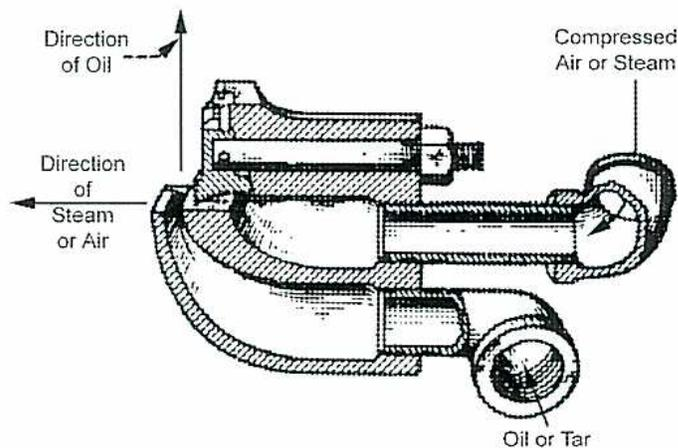
Figure 34
External Mix Atomizer
Internal mix, or premix, atomizers are more effective over a wider range of loads, but produce a larger demand for the atomizing medium. The turndown ratio can be up to 10:1, and up to 20:1 for Y-Jet types. Typical internal mix atomizers are shown in Figure 35.
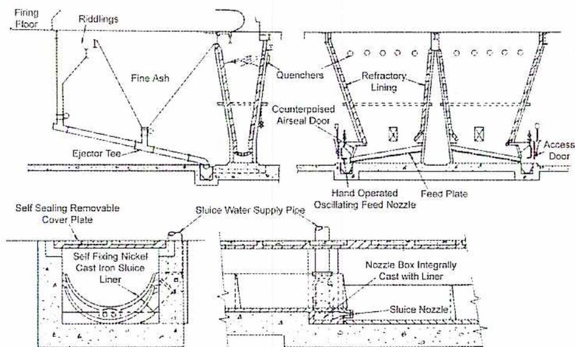
Figure 35
Internal Mix Atomizers
The Y-Jet internal mix atomizer, shown in Figure 35, has the oil and air or steam mixing at the sprayer nozzle just before exiting the atomizer. It is referred to as a constant differential design because the air or steam pressure must be maintained at a constant differential above the oil pressure, typically 280 kPa.
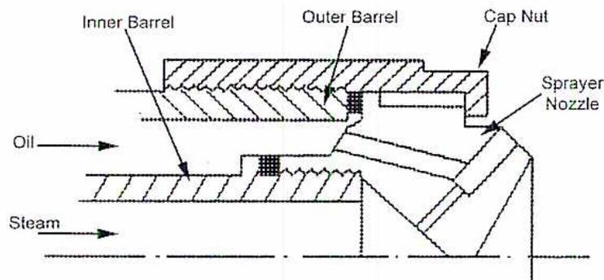
Figure 36
Y-Jet Atomizer
Rotary cup atomizers, as shown in Fig. 37, feature a fan and fuel cup that are rotated at 70 – 100 rev/s by an external motor. Fuel is supplied through a metering pump which may be driven by the same motor. The fan provides combustion air around the periphery of the cup, using centrifugal force to break the oil stream into droplets as the oil exits. The air and oil droplet streams rotate in opposite directions, assisting both with atomization and with fuel/air mixing. This has the following advantages:
- • A relatively low oil pressure is required
- • Throughput can be quite high
- • Turndown ratio is up to 20:1
- • More viscous oil can be used
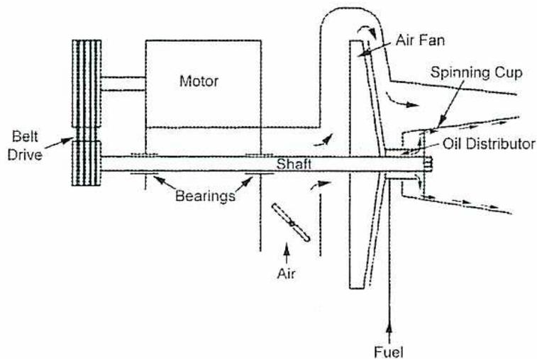
This schematic diagram illustrates a rotary cup atomizer. On the left, a 'Motor' is connected via a 'Belt Drive' to a horizontal 'Shaft'. The shaft is supported by 'Bearings'. At the right end of the shaft, an 'Oil Distributor' and a 'Spinning Cup' are mounted. An 'Air Fan' is positioned above the spinning cup. 'Air' is shown entering from below and being drawn into the spinning cup. 'Fuel' is shown entering from the bottom into the oil distributor. Arrows indicate the flow of air and fuel into the spinning cup for atomization.
Figure 37
Rotary Cup Atomizer
Coal Burners
Coal burners have a simple design and construction. They do not require any premix or atomization provisions because the fuel admitted to them is already pulverized and mixed with air. The air serves as the conveying medium from pulverizer to burner. The burner may be little more than a length of pipe projecting into the furnace with a nozzle or bucket on the interior end which shapes the flame and directs the fuel into the furnace centre or fireball. Horizontal vanes are used to shape and direct the flame. The construction materials withstand considerable wear because a stream of pulverized coal is very erosive. Any change in flow direction is undesirable because of the increased opportunity for wear, so the burners tend to be straight. Because coal quality is quite variable, steam temperature control requires special attention. It is common to use tilting burners for coal firing. Fig. 38 illustrates a typical tilting coal burner for tangential firing.
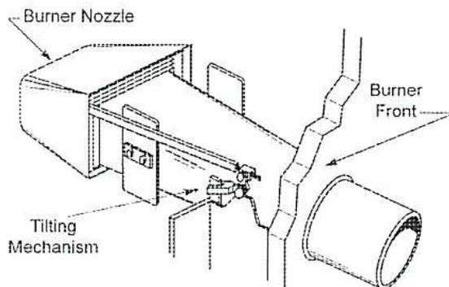
This 3D perspective diagram shows a pulverized coal burner. The main component is the 'Burner Nozzle', which is a long, rectangular duct. At the far end of the nozzle is the 'Burner Front', which has a curved, bucket-like shape. A 'Tilting Mechanism' is located at the base of the burner nozzle, allowing it to pivot. Arrows indicate the internal flow of pulverized coal and air through the nozzle.
Figure 38
Pulverized Coal Burner
More advanced burners use internal radial vanes or a central longitudinal impellor to create a swirl in the coal/air stream to increase turbulence and combustion efficiency. Arrangements of internal vanes are also used for low NO x burners.
The usual practice for a pulverized coal combustion system is to arrange the burners so that each pulverizer supplies fuel to all of the burners on one elevation. The head required from the pulverizer fan is the same for each burner that it supplies, helping to ensure uniform distribution of the coal. An alternative approach, for steam generators that use opposite firing, is to have each pulverizer supply all of the burners on one elevation of one wall, so that the total number of pulverizers is twice the number of elevations.
Because each pulverizer is supplying multiple burners, the fuel/air piping is arranged to ensure that fuel is evenly distributed between the burners. Flow from the pulverizer is initially in one pipe which splits into two or three streams as required. This is accomplished using distributors at each point where the piping is divided. The distributor has vanes which divide the fuel/airflow into several strips that are directed into a specific piping branch. A typical distributor is shown in Fig. 39.
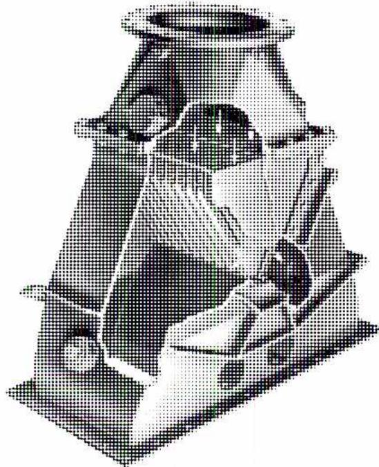
Figure 39
Pulverized Coal Distributor
Because the burners are arranged in vertical rows, air staging to reduce NO x emissions is relatively simple to achieve. Altering the airflow through each pulverizer so that the burner elevations are alternated between fuel-rich and fuel-lean mixtures stages combustion. Shutting down the coal feed to the pulverizer that supplies the highest elevation is termed 'burners-out-of-service' operation. In some plants, the combustion system is specifically designed to maintain layers of fuel-rich and fuel-lean mixtures in a tangential firing arrangement.
In steam generators that use either fluidized bed combustion or a stoker to feed coal, air staging is an integral part of the furnace design because overfire air nozzles or jets are used to add secondary air after combustion has already begun.
Fuel staging is also sometimes used with coal burners through a process called reburning . Additional fuel is added downstream of the primary ignition zone, often in the form of gas or oil in an amount equal to 10 – 20% of the total fuel flow. Dedicated reburn burners used for this purpose are located above the main burners. Hydrocarbon radicals formed reduce NO from the ignition zone to elemental nitrogen, using the oxygen atom from the NO for combustion. NO x reduction of 75 – 90% is possible when used in combination with low NO x burners.
Combination Burners
Burners that are designed for use with two or more fuels must accommodate very different fuel characteristics without changing their heat output. Steam temperatures must be maintained at all loads regardless of the fuel being burned even though one fuel generates more heat than another. As process byproducts are more frequently used for fuel, and as fuel prices fluctuate, there is a growing demand for steam generators that can use as many as eight different fuels. This often means a combination of gaseous, liquid, and/or solid fuels.
Oil flames tend to be more luminescent than gas flames, and this means that gas flames cause lower heat absorption and increased exit gas temperature. This higher gas temperature when firing gas fuel also increases the NO x emissions. The higher nitrogen content of oil fuel increases NO x . Combination burner designs must address these differences between thermal and fuel-based NO x emissions. Fig. 40 shows a typical round flame dual fuel gas burner for gas and oil firing from a furnace floor.
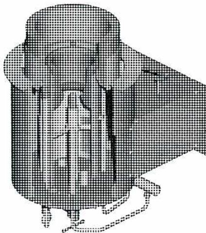
Figure 40
Combination Burner
It is common to have burners that use gas and oil as optional fuels. This is achieved by enclosing two sets of burners in one enclosure with a common combustion air supply. This is seen in Figure 41 showing an oil and gas combination burner. It is a ring type gas burner with an oil gun in its centre.
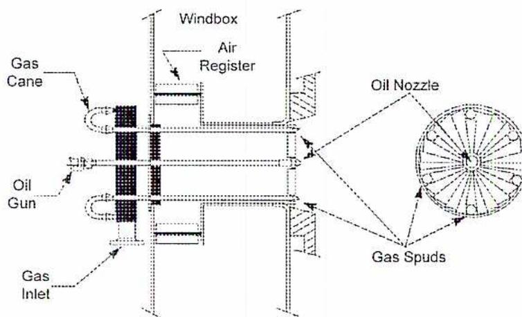
The diagram illustrates a combination burner assembly. On the left, a vertical cross-section shows the internal components: a 'Gas Inlet' at the bottom, an 'Oil Gun' in the center, and a 'Gas Cane' at the top. These are housed within a 'Windbox' which contains an 'Air Register'. To the right, a circular cross-section of the burner face shows an 'Oil Nozzle' at the center surrounded by 'Gas Spuds' arranged in a ring.
Figure 41
Combination Burner
Igniters
Igniters are smaller burners that are mounted adjacent to, or within, a main burner to produce a stable and proven ignition source when the main burner is first lit. After the main flame has been established and proven, the igniter may be shut down to save fuel, or it may be left on for flame stability. This choice depends on the igniter, burner and boiler design, the fuel being used, and the plant's operating philosophy. It is common for an igniter to burn a fuel which is different from the fuel the main burner uses. This is especially true if the main fuel is a specialty fuel or process by-product which is inherently unstable or difficult to ignite, such as black liquor in a chemical recovery boiler.
Igniters require their own ignition source when they are lit. It is usually an electrical or electronic apparatus producing sparks to light the igniter fuel. In some cases, the spark apparatus is called the igniter and the igniter burner is called the pilot burner.
The National Fire Protection Agency (NFPA) has defined three classes of igniters. In addition, Class 3 Special igniters consist only of a high energy electrical spark apparatus without a flame which ignites the main flame directly. They are also called High Energy Igniters (HEI) or High Energy Arc (HEA) igniters.
Class 3 igniters are interrupted igniters. They are low capacity igniters with fuel input and energy output that is no more than 4% of the capacity of the main burner. They do not operate for longer than is required to ignite and prove the main flame and are common for gas and oil firing. They can be used only under the light off conditions that have been prescribed for the boiler and burners in question.
Class 2 igniters are intermittent igniters. They generally use 4 – 10% of the fuel flow of the main burner, and may be left in service for flame stability at low loads or in times of boiler upset. They can be used to ignite the main flame only under the prescribed light off conditions.
Class 1 igniters, or continuous igniters, are high capacity igniters that generally exceed 10% of the main burner's fuel flow. They can be used for ignition under any conditions and can be left in service to supplement the main burner and increase its turndown ratio. Figure 42 illustrates a Class 3 igniter in an oil burner.
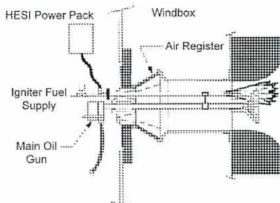
A schematic diagram of an oil burner assembly. On the left, a 'HESI Power Pack' is shown as a dashed rectangle. Below it, an 'Igniter Fuel Supply' line enters the assembly. A 'Main Oil Gun' is shown as a solid line entering from the bottom left. The central part of the assembly is the 'Windbox', indicated by a vertical dashed line. To the right of the windbox is an 'Air Register', shown as a grid-like structure. The igniter assembly extends through the windbox and air register, terminating in a nozzle on the far right. Various other components are indicated by dashed lines and labels.
Figure 42
Igniter
Duct Burners
Heat Recovery Steam Generators (HRSG's) used in cogeneration plants often have burners installed in the duct between the gas turbine exhaust and the HRSG hot gas inlet. These burners impart additional heat to the gas entering the HRSG increasing the steam generation capacity for plants that have a high demand for process steam heating.
Another purpose of duct burners is to elevate the HRSG flue gas discharge temperature to stay above the acid dew point, and s avoid acid corrosion of the flue gas path. If this is the primary reason for duct burner installation, the burner may be installed downstream of the HRSG superheater.
Duct burners may also be installed in the air inlet ducts of fluidized bed boilers, to preheat the bed during startup.
Duct burners are simply designed using residual oxygen in the flue gas stream for combustion and not adding any additional air to the fuel stream. This is possible because turbine exhaust gas typically still has 11% - 16% oxygen content. The elevated temperature of the oxygen supply offsets any tendency toward flame instability because of low oxygen content. In some cases, the burner design allows for a reduced oxygen content and increased water content in the gas stream as a result of steam or water which is injected into the gas turbine for NO x control.
Duct burners are installed so that their output is parallel to the gas flow in the duct, providing co-flow mixing. Large installations may utilize a grid configuration type of burner, with a series of burner elements arranged in horizontal and vertical rows all connected to a single fuel supply manifold. A less common arrangement is to use a grid configuration for oil firing, with the grid mounted on the side of the duct and the fuel injected at right angles into the gas stream, using cross-flow mixing.
Duct burners require a provision for flow straightening in the flue gas stream upstream of the burner to control the gas velocity and distribution. Vanes in the duct are used for this purpose. The most common design uses perforated plates that span the duct.
Cogeneration duct burners have low NO x emissions because of the low oxygen content in the flue gases supplied to them, lowering the flame temperature and slowing the combustion reactions.
Objective 5
Describe the principle, design, and application of pulverizers.
PULVERIZERS
Coal is crushed before delivery to a power plant, but it is often pulverized to a fine powder to be used effectively in a steam generator furnace. To be conveyed in an air stream, the pulverized coal must be in very small particles. Additionally, complete combustion of the coal requires a maximum surface area exposed to the combustion air, and this requires as small a particle as possible. Reducing the crushed coal to a combustible size is done in mechanical pulverizers or mills.
Control of the particle size is important, because too coarse a particle causes lost efficiency, wasted fuel, and a potential for explosion due to unburned fuel in the furnace. Too fine a particle causes excessive power consumption and wear in the pulverizers because the coal is recirculated through them unnecessarily. Classifiers within each pulverizer or in the piping at its discharge control particle size. Most classifiers are simply vanes that cause a change in coal/air velocity, so that larger particles do not have the momentum to continue traveling and fall out of suspension. The particle size is controlled by adjusting the angle of the classifier vanes. This is usually done externally while the pulverizer is loaded. A typical requirement for coal fineness is to have 80% of a representative sample pass through a 200 mesh, with a predetermined amount (usually 95 – 99%) passing through a 50 mesh. This is close to the consistency of flour.
Pulverizers require a fan to either force or induce air to move through them. This fan may be integral with the pulverizer or an external forced air fan supplying several pulverizers through a common air duct. The air acts as the conveying medium for the pulverized coal to transport it out of the pulverizer to the burners. It also serves as the primary combustion air. The primary air is often preheated, up to 316°C, to assist drying the pulverized coal for better combustion.
Pulverizers are classed according to whether they use an induced draft fan (an exhaust fan or exhauster) or a forced draft fan (called a primary air fan.) Forced air pressurizes the pulverizer, which requires extra attention to seals to ensure that hot air and coal dust do not leak out. The advantage of exhaust fans is that they maintain the pulverizer at a negative pressure, reducing both the safety risks and housekeeping associated with leakage. However, because they move coal along with the air, exhaust fans are larger than forced air fans and constructed with materials that are much more erosion resistant. Exhauster fan blades are often the highest maintenance part of a pulverizer due to abrasive wear.
Pulverizers can also be classed according to whether they primarily use metal grinding elements that contact each other as well as the coal, or whether they rely on attrition (coal particles impacting each other to produce the pulverizing effect.) Some designs use both methods, but one usually predominates. Attrition reduces wear, and sometimes noise, but it may cause more coal to be rejected from the pulverizer as non-grindable. The rejects are often called “pyrites” because iron pyrite is the main constituent of non-grindable material in coal. However, the pyrites stream also includes stray metal pieces, unusually hard lumps of coal, and other materials.
Pulverizer designs that have metal-to-metal contact include tube mills and ball-and-race mills. Attrition designs include impact mills. Bowl mills can be utilized either way.
Tube Mills
Tube mills were adapted from cement plants and the mining industry. It is a cylindrical shell, or tube, containing loose cast iron or alloy steel balls which crush the coal as the cylinder rotates. Rotational speed is limited because the balls must be free to roll or drop onto the coal. Centrifugal force cannot be allowed to overcome gravity and prevent the balls rolling.
Tube mills are noisy in operation, have poor control of coal fineness, and a high power consumption. There is a relatively large amount of coal stored in the mill which makes it responsive to load changes. In the event of a mill or boiler trip, this can be a liability. An advantage of tube mills is their ability to pulverize hard coals such as anthracite.
Figure 43 illustrates a tube mill with the coal feeder on the left end and discharge through an exhauster on the right end. Other designs may have coal fed in at both ends.
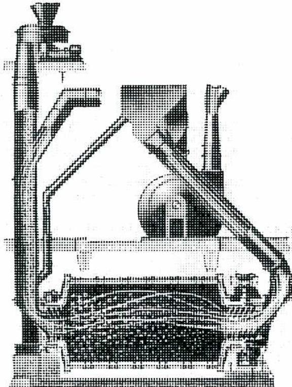
Figure 43
Single Ended Tube Mill
Ball-and-Race Mills
Ball-and-race mills, also called ball mills, contain two horizontal races shaped like doughnuts with concave surfaces facing each other. Iron or steel balls are contained between the races in a ring. The lower race is gear driven, and as it turns, the balls are also rotated. The upper race is stationary, but springs compress it downwards to maintain tension between the balls and races. Wear on the balls is allowed for and their replacement made less frequent. Coal is admitted to the centre and is ground between the balls and lower race. An external forced air fan usually supplies the air. The airflow lifts the pulverized coal upwards from the races to the classifier at the top of the pulverizer and then to the burners. An example is shown in Fig. 44.
![A detailed cross-sectional diagram of a ball-and-race mill. The diagram shows a vertical shaft driving a grinding assembly consisting of two conical races and several spherical balls. Coal is fed through a central pipe into the grinding zone. Air is introduced from the side and forced upwards through an annular passage. The pulverized coal and air mixture is then directed upwards through a series of curved vanes into a large, conical outer casing. At the bottom of the mill, a horizontal shaft drives a fan or exhauster. Two legends at the bottom indicate the flow paths: a dashed line with arrows for coal and a solid line with arrows for air. dashed line with arrows solid line with arrows](d5a837fa4f4675e5ee596003cf55985c_img.jpg)
Path of coal through the mill is shown thus:
Path of air through the mill is shown thus:
Figure 44
Ball-and-Race Mill
Ball-and-race mills are noisy and can have high maintenance costs, but they are capable of pulverizing hard coals with very little rejected material.
Impact Mills
Impact mills use a horizontal shaft that rotates hammers or pegs that strike the coal and break it by impact. These are high speed designs, operating at 1200 to 1800 rev/min, that contain relatively small amounts of coal. They have historically had high maintenance costs, but newer materials and design methods have reduced maintenance requirements. An integral exhauster is included as part of the mill. An example is shown in Fig. 45.
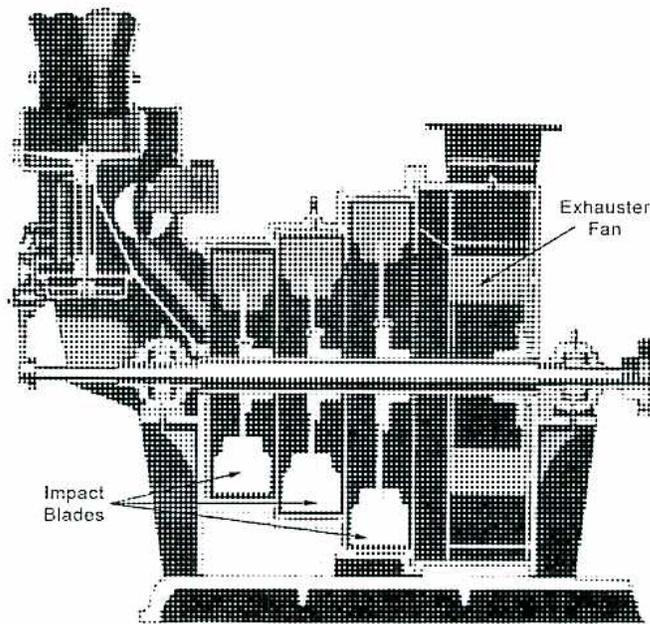
Figure 45
Impact Mill
Another version of an impact mill is the hammer mill, in which rotating swing hammers force the coal against a stationary metal grid as the coal is conveyed through by the primary air stream.
Advantages of a hammer mill include the following:
- • Suited to lower cost fuels, and lower grade coal such as lignite
- • Able to handle wet coal
- • Low maintenance, resulting in high availability
- • Small space and low overhead requirements
- • Low power consumption
- • Fast response to changes in loading
Fig. 46 shows the hammers and grid of a Babcock Power ATRITA hammer mill, and exhaust fan.
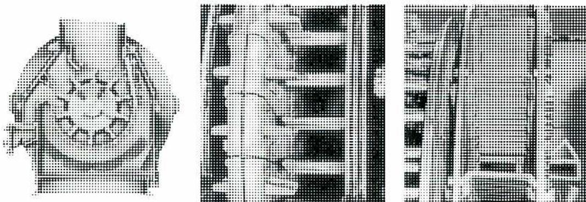
Figure 46
Hammer Mill
Bowl Mills
In a bowl or roller mill, coal is admitted at the top of the pulverizer and falls to the rotating bowl, or table, near the bottom. Three angled rollers are suspended either just above the bowl or in contact with it and although they are free to turn, they are not powered. As the bowl turns, coal is crushed between it and the rollers. The rollers are positioned by springs which maintain tension on the surface of the coal load, but also enable them to “float” vertically as the depth of the coal load changes. Primary air entering at the bottom moves upward through the pulverizer, carrying with it the coal particles that have been pulverized finely enough to be conveyed. A classifier section at the top of the pulverizer admits only particles of a predetermined maximum size, and the remainder fall back into the pulverizer for additional grinding. Pyrites are rejected over the rim of the bowl and a rotating arm sweeps them into a hopper beneath the bowl. Bowl mills may be installed with either an integral exhauster or as pressurized mills using an external forced air fan.
Advantages include the following:
- • Excellent classifier functioning and control
- • High grinding efficiency
Fig. 47 illustrates a Babcock Power DB Riley MPS bowl mill with rollers positioned in contact with the bowl.
![A detailed cross-sectional diagram of a Babcock Power DB Riley MPS bowl mill. The diagram shows the internal components of the mill, including the grinding table, rollers, classifier housing, and various inlets and outlets. Labels with leader lines point to specific parts: Pulverized Coal Outlet, Coal Inlet, Vane Operator, Classifier Inlet Vanes, Classifier Housing, Grinding Roller, Nozzle Ring, Grinding Table, Tension Rod, Planetary Gear Drive, Rejects Hopper, Primary Air Inlet, Pulverizer Housing, and Compression Springs. The mill is shown in a vertical orientation with the coal inlet at the top and the pulverized coal outlet at the top. The grinding table is at the bottom, and the classifier housing is at the top. The rollers are positioned above the grinding table, and the primary air inlet is at the bottom. The rejects hopper is at the bottom left. The planetary gear drive is at the bottom right.](472b4b1952940f919fbd8584e83daa36_img.jpg)
Figure 47
Bowl Mill
Fig. 48 illustrates a Raymond bowl mill and exhaust fan with rollers positioned without contact with the bowl.
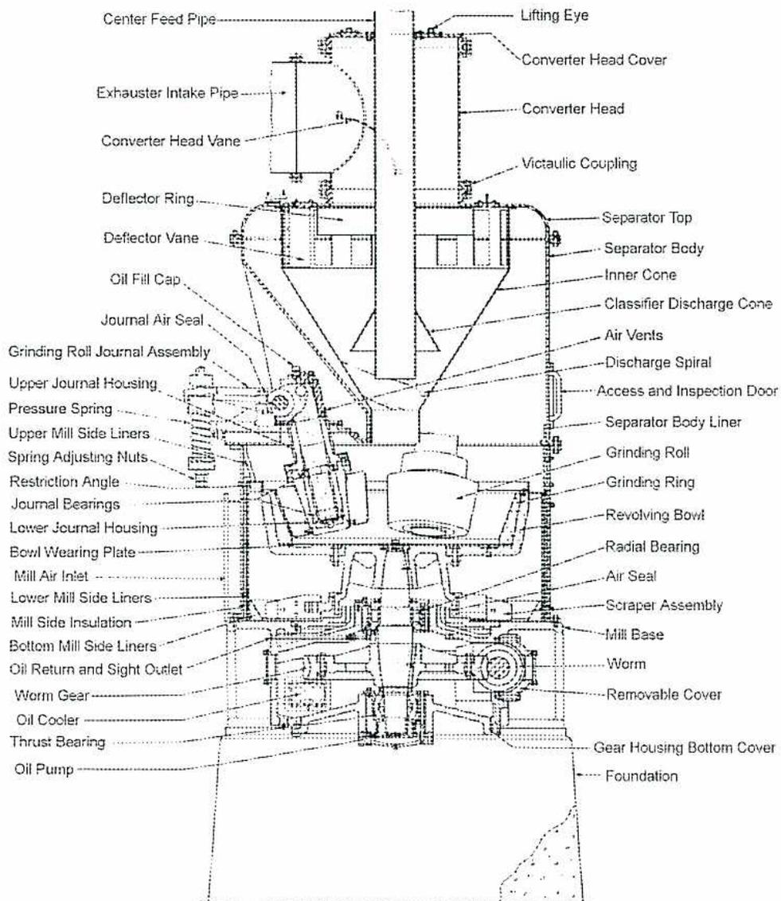
The diagram is a cross-sectional view of a Raymond bowl mill and exhaust fan. It is densely labeled with the following components:
- Center Feed Pipe
- Lifting Eye
- Exhauster Intake Pipe
- Converter Head Cover
- Converter Head
- Converter Head Vane
- Victaulic Coupling
- Deflector Ring
- Separator Top
- Deflector Vane
- Separator Body
- Oil Fill Cap
- Inner Cone
- Journal Air Seal
- Classifier Discharge Cone
- Air Vents
- Grinding Roll Journal Assembly
- Discharge Spiral
- Upper Journal Housing
- Access and Inspection Door
- Pressure Spring
- Separator Body Liner
- Upper Mill Side Liners
- Grinding Roll
- Spring Adjusting Nuts
- Grinding Ring
- Restriction Angle
- Journal Bearings
- Revolving Bowl
- Lower Journal Housing
- Radial Bearing
- Bowl Wearing Plate
- Air Seal
- Mill Air Inlet
- Scraper Assembly
- Lower Mill Side Liners
- Mill Base
- Mill Side Insulation
- Worm
- Bottom Mill Side Liners
- Oil Return and Sight Outlet
- Removable Cover
- Worm Gear
- Oil Cooler
- Thrust Bearing
- Gear Housing Bottom Cover
- Oil Pump
- Foundation
Figure 48
Bowl Mill
Design Improvements
Considerable research has been done in recent years to improve pulverizer technology, and many plants have retrofitted older pulverizers with newer technology. Pulverizers tend to require high maintenance because of the high degree of erosion they are subjected to and upgrading has improved service life and reliability. Changes include:
- • Redesign of the metal liners in the high wear areas to reduce direct impingement from the coal stream
- • Ceramic coating or tiles affixed to the liners, exhauster blades, classifiers, and coal/air piping to provide a more erosion resistant surface
- • Silicon carbide used on high wear parts to harden them, especially in the exhauster area and in the raw coal feed to the pulverizer
- • Specialty erosion resistant metals are used for weld overlays when worn metal parts are built up with welding metal
Another area of development is the fineness of pulverized coal. Combustion staging for NO x reduction requires some of the fuel/air mixture to be fuel-rich, and this can generate unburned carbon in the furnace unless the pulverization is made finer to compensate for the oxygen-lean atmosphere. Methods of increasing the coal fineness include dynamic rotating classifiers in place of the traditional static classifiers. Research is also underway on coal micronizers, which are specialized pulverizers that reduce the coal particle size to that of talcum powder. Micronizers may either be in addition to, or in place of, conventional pulverizers. Micronized coal is sometimes used as a reburn fuel for fuel staging.
Bowl mills are the most commonly used type in pulverized fuel plants, and a number of improvements have been made to their design. Fig. 49 shows a bowl mill design where a vane wheel replaces the usual slots in the periphery of the bowl allowing airflow to move upward over the bowl, carrying the pulverized coal with it. The vane wheel is a stationary annulus around the outside of the bowl, fitted with radial vanes which substantially increase the airflow. The result is higher loading capacity for the mill. Fig. 49 also shows that ceramic linings have been used on some high wear parts.
![A detailed cross-sectional diagram of an Improved Bowl Mill. The diagram shows the internal components and the flow of coal and air. Raw coal enters through a central Feed Pipe. Pulverized coal is shown exiting through a Discharge Valve and an Outlet Venturi. The mill contains a Bowl, a Grinding Ring, and a Grinding Roll (Roller) held by a Journal Assembly and Spring Assembly. A Vane Wheel Assembly is located above the bowl. Air enters from the bottom, labeled 'Primary Air', and passes through the bowl assembly. The mill is housed in a Separator Body with a Separator Top and a Classifier Assembly. Other labeled parts include a Discharge Valve, Seal-Air Header, Multiple Port Outlet, Ceramic Venturi Vane, Ceramic Line Cone, Millside and Liner Assembly, Scraper, and a Planetary Gearbox at the base.](ac852a162572ca8a8c8478c49b571af5_img.jpg)
Figure 49
Improved Bowl Mill
Another bowl mill improvement is the use of hydraulic gear to provide tension on bowl mill rollers, in place of springs. This provides more uniform tension and as much as 50% improvement in mill capacity.
Coal Feeders
Each pulverizer requires a feeder which meters and directs the continuous coal feed from a storage bunker to the pulverizer. The pulverizer is located below the feeder so gravitational force moves the coal to it. Combustion control loops normally regulate the output of the coal feeder to control fuel flow, rather than making any adjustment directly to the pulverizer.
Coal feeders can be either gravimetric or volumetric. Gravimetric feeders weigh the coal flowing through them to meter the mass of coal being fed to each pulverizer. Some combustion control systems require this type of metering. Volumetric feeders simply control the volume of coal being fed.
A common type of volumetric coal feeder is the belt feeder, which is an endless conveyor belt that accepts a coal flow from a bunker at one end, and discharges into a pulverizer at the other end. Varying the belt speed controls the flow. Plates and guides are used to regulate the depth and shape of the coal stream on the belt. Installing levers and balance weights to weigh the coal or using a solid state load cell on the belt converts this design to gravimetric feed.
Another common volumetric design is the overshot roll feeder. This design features a rotating spider within an enclosure, so that the spaces between the rotating blades contain fixed volumes of coal that are delivered with each rotation. The advantage of this design is that it allows hot air to be used within the hollow stationary spider core, or admitted to the feeder enclosure. The coal is partially preheated and dried prior to pulverization. Fig. 50 shows this type of feeder which can also be mounted directly on to the side of a pulverizer.
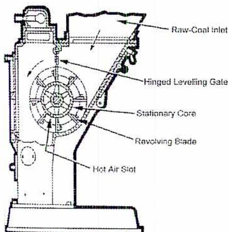
A cross-sectional diagram of an overshot roll coal feeder. The diagram shows a central rotating assembly (the 'spider') with multiple blades, labeled 'Revolving Blade'. This assembly is housed within a stationary outer casing, labeled 'Stationary Core'. Coal enters from the top through a 'Raw-Coal Inlet'. A 'Hinged Levelling Gate' is positioned at the inlet to regulate the coal flow. A 'Hot Air Slot' is indicated at the bottom of the stationary core, allowing for the introduction of hot air into the feeder enclosure. The entire unit is mounted on a solid base.
Figure 50
Overshot Roll Coal Feeder
Objective 6
Describe the principle, design, and application of ash and slag disposal systems.
Solid fuels have constituents that only partly oxidize in a furnace flame and remain in a solid form that is removed from the furnace. Called ash , this solid material is primarily composed of oxides of the metals that are present in the fuel supply. Silica, \( \text{SiO}_2 \) , is the most prevalent component and constitutes 23 – 63% of the ash.
In coal, the ash content is partly due to mineral content in the coal and partly due to the amount of dirt and soil which is entrained with the coal. Coal contains from 5 – 40% ash when burned, so a considerable amount of ash must be conveyed from the furnace. In a large power plant thousands of tonnes of ash is removed every day.
Wet Bottom Ash
Coal ash is divided into two components in a steam generator furnace, depending on the elements being oxidized. One component, called bottom ash or coarse ash, is liquefied in the heat of the furnace flame, and is transported through the furnace until a section is reached where the furnace temperature is below the ash fusion temperature. At this point, the molten ash solidifies, first into soft plastic shapes, and eventually into dense, hard, often glassy chunks which are too dense to be carried in the flue gas stream. The exact composition of the ash determines its fusion temperature and its adherence, or stickiness, to the steam generator waterwalls. If it is sufficiently adherent, it forms slag on the waterwalls until sootblowing removes the slag and it falls by gravity to the furnace floor. Otherwise, it agglomerates into pieces in the gas stream until its mass is sufficient to cause it to fall. Particle size can vary from coarse sand to individual pieces that are three metres or more in size.
Pulverized coal-fired furnaces are open at the bottom with one or more collection hoppers placed at the opening to collect the bottom ash that falls. Each hopper is shaped like an inverted pyramid with sloped slides that allow the ash to slide down for emptying from the bottom. These hoppers can be filled with water, producing a wet bottom furnace . The ash chunks that fall into the water are cooled for conveying and fractured by the quenching effect. The hoppers are periodically emptied through rotating grinders at the bottom into a conveying pipeline. A venturi and water nozzle, or jet pump, beneath the grinder produces the hydraulic force to convey the ash and induce a pressure reduction helping to draw the ash through the grinder and into the piping. Angled nozzles in the hopper side panels often assist this function. The grinder's purpose is to ensure that the ash particles are small enough to avoid plugging the pipeline. The ash is deposited into a sump, dewatering bin, or external settling pond. This system is illustrated in Fig. 51.
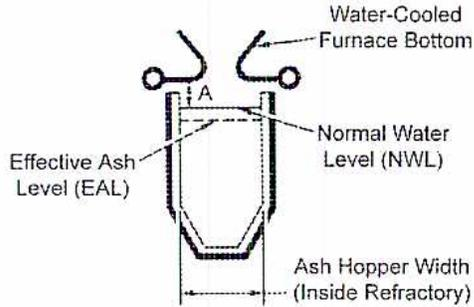
Figure 51
Bottom Ash Hoppers
An overflow weir maintains a standard water level, so that falling ash cannot overfill the hopper and risks having relatively cool water contact the hot steam generator tubes. The hopper is fitted with an open top seal trough along its top perimeter which is filled with water. The hopper is supported from below, and the steam generator is suspended from above. The two are not attached, so the steam generator is free to expand vertically as it heats without stressing the hopper. The bottom of the steam generator casing is within the trough. The water serves as a seal to prevent air ingress which would upset the furnace draft and excess air control systems. Fig. 52 illustrates a typical bottom ash grinder.
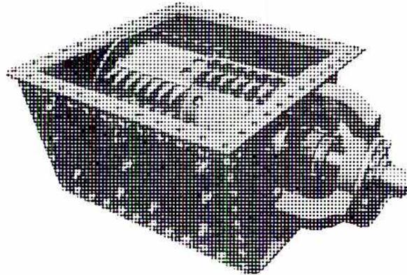
Figure 52
Bottom Ash Grinder
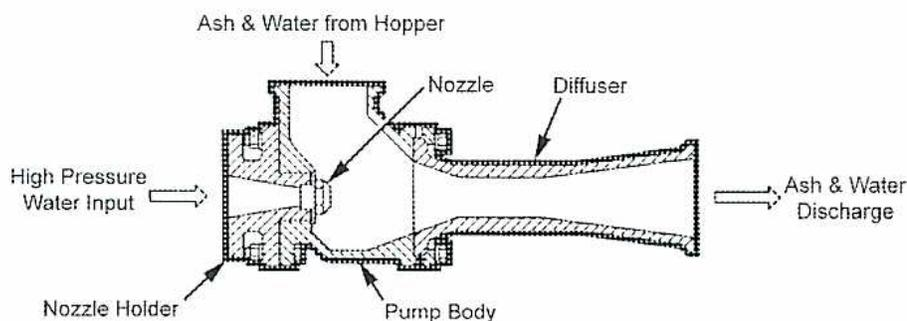
Figure 53
Bottom Ash Jet Pump
The jet pump as illustrated in Fig. 53 has several advantages over a mechanical pump, such as a centrifugal design, including:
- • No moving parts and no external drive needed, which is a particular benefit since the location of the pump is usually dirty and has poor access
- • Able to handle air and varying suction head pressures with no change in output and no vapour locking
- • Self-regulating design. Increased back pressure of a loaded or plugged discharge line simply results in a reduced flow of solids
Dry Bottom Ash
In a dry bottom furnace , the hoppers are dry. Hopper design, including the seal trough, is similar to a wet bottom system with the following differences:
- • More supervision by the operator is usually required, as the system operation is less automated and more prone to plugging
- • The sides of the hoppers are steeper because there are no flushing or jetting nozzles to assist ash flow
- • The hopper interior is lined with refractory because it is not water cooled
Another variation is a system that allows the ash to be conveyed from the hopper in a dry state. In this case, a chain or scraper conveyor, which can empty into a holding bin or directly into a truck box or railcar, removes the ash. Its lower end is submerged in a water trough located beneath the steam generator furnace. The advantages of this system are reduced water and power requirements, lower height requirement than for a wet system, and continuous rather than intermittent operation. It is not suitable for use with coals that have a low ash fusion temperature because they form adherent deposits in the dry hopper that are difficult to remove. Fig. 54 shows the dry bottom ash system.
Figure 54
Dry Bottom Ash System
Flyash
The other component of ash is called flyash . This is a much less dense material, varying from small flakes to a fine powder, which is conveyed with the gas stream out of the steam generator. Some flyash is collected in hoppers at strategic points where there is a change in direction of the gas stream. For example, a hopper may be located near the juncture between the upflow radiant pass and the downflow convection pass. At these points, the change in gas velocity is sufficient for some ash particles to fall out of the stream. Most of the flyash is removed in a downstream baghouse, electrostatic precipitator, or scrubber, and deposited into collection hoppers to meet environmental emissions standards for stack opacity or particulate matter.
Flyash is conveyed from the hoppers in one of three ways:
- • Hydraulically in a water stream, similar to the way in which wet bottom ash is conveyed.
- • With a vacuum system, in which the conveying pipeline is maintained at a sub-atmospheric pressure to draw the ash into it from the hoppers. A motor driven vacuum pump with a centrifugal collector and fabric filter between it and the pipeline may be used to induce the vacuum so that ash cannot enter the pump. Alternatively, a ring of water nozzles, or ejectors, around the inner periphery of the pipe discharge may be used to induce the vacuum so that the ash is mixed with water as it leaves the pipeline
- • In a dry form in a pressurized pneumatic pipeline, using a blower to provide the conveying air stream. This requires a specialized feeder, called an air lock, to move the ash from each ash hopper into the pressurized piping, as the hoppers are subject to steam generator draft and so are at a negative pressure.
Where cyclone furnaces are used, the flyash may be returned to the furnace, where the intense heat liquefies it and removes it in molten form with the rest of the slag. Cyclone furnaces produce smaller amounts of flyash than a conventional furnace, and in some cases they can be operated with minimal downstream dust removal.
Ash Disposal Systems
Fig. 55 illustrates a system for removal of bottom ash and flyash using high pressure water as the conveying medium. Two pulverized coal steam generators are shown, with ash removed from the bottom of one and from the dust hoppers at the top of the other. Both are deposited into sluiceways leading to a wet sump. The bottom ash is removed and loaded on to road or rail transport, while the dust is pumped in wet form to a land fill.
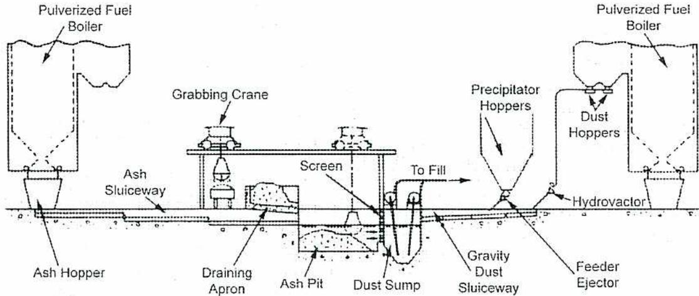
This schematic diagram illustrates a hydrojet ash disposal system. On the left, a 'Pulverized Fuel Boiler' has an 'Ash Hopper' at its base. An 'Ash Sluiceway' leads from this hopper to a central 'Ash Pit'. A 'Grabbing Crane' is positioned above the ash pit. To the right of the ash pit is a 'Screen' and a 'Dust Sump'. A 'Draining Apron' is located between the ash pit and the screen. From the dust sump, a line labeled 'To Fill' extends to the right. Further right, 'Precipitator Hoppers' and 'Dust Hoppers' (connected to another 'Pulverized Fuel Boiler') feed into a 'Gravity Dust Sluiceway'. This sluiceway leads to a 'Feeder Ejector' and a 'Hydrovactor' unit.
Figure 55
Hydrojet Ash System
Figs. 56 and 57 show the steam generator ash hopper and the use of a high pressure water jet to propel the ash into the sluiceway. On arrival in the sluiceway, water from a succession of sluice nozzles propels the ash until it discharges through a crusher into the ash sump.
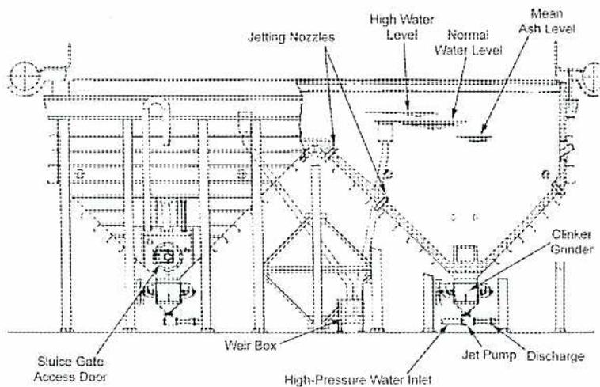
This detailed cross-sectional diagram shows the internal arrangement of an ash hopper. At the top, 'Jetting Nozzles' are shown. The hopper contains water with three indicated levels: 'High Water Level', 'Normal Water Level', and 'Mean Ash Level'. On the left side, there is a 'Sluice Gate Access Door'. The bottom of the hopper features a 'Weir Box' and a 'High-Pressure Water Inlet'. A 'Clinker Grinder' is located at the bottom center. The 'Discharge' point is at the bottom right, connected to a 'Jet Pump'.
Figure 56
Hydrojet Hopper and Nozzle Arrangement
![Figure 57: Hydrojet Hopper and Sluiceway. The diagram consists of two main parts. The top part shows a cross-section of a hopper with a 'Firing Floor' at the top. 'Riddlings' and 'Fine Ash' are shown falling through a series of vertical tubes labeled 'Quenchers'. These tubes pass through a 'Refractory Lining' and a 'Counterpoised Airseal Door'. At the bottom of the hopper is an 'Ejector Tee'. The bottom part shows a 'Sluiceway' with a 'Self Sealing Removable Cover Plate' and a 'Self Fixing Nickel Cast Iron Sluice Liner'. A 'Sluice Water Supply Pipe' enters from the top and connects to an 'Oscillating Feed Nozzle'. This nozzle is part of a 'Nozzle Box Integrally Cast with Liner', which leads into a 'Sluice Nozzle'.](2173c0102e23a5ff29d90d4353fc0339_img.jpg)
Figure 57
Hydrojet Hopper and Sluiceway
There are various methods for final disposal of ash removed from a steam generator. It is often taken by truck or pipeline to the mine where the coal originated used as fill for the mined area. If the ash can be recovered in a dry form, it is often suitable as an inexpensive partial replacement for cement in the manufacture of concrete. Bottom ash is sometimes used as a substrate for road construction. These uses are not only environmentally desirable, but they can generate an additional revenue stream for the plant.
Fig. 58 shows an ash handling system, again operated by high pressure water. The ash is collected as before into an ash sump but in this case, it is pumped wet into an overhead ash bunker. It is drained and then allowed to fall by gravity into road or rail transport vehicles. The action of high-pressure water flowing through ejectors puts the dust system under vacuum. "Windswept" valves allow an air intake to entrain dust particles and convey them towards the ejectors. The dust is separated from the air at the cyclone separator and then dumped through a vacuum sealed door into the bunker. A proportion of water is mixed with the dust leaving the bunker to prevent it blowing away during transport.
![Schematic diagram of an industrial dust disposal system. On the left, 'Dust Hoppers' with 'Windswept Dust Valves' lead into a horizontal 'Ash Sluiceway'. A 'Clinker Grinder' is connected to the bottom of the sluiceway. A 'Hydroseal Ash Pump' is located at the junction of the sluiceway and a vertical 'Dust Suction Line'. The suction line leads to a 'Discharge to Overhead Ash Bunker'. Below the sluiceway, a 'Make Up Connection to Ash Sump' enters. The suction line continues to a 'Twin Ejectors' unit, which is connected to a 'Reservoir'. From the reservoir, an 'Air Suction Line' leads to a 'Cyclone Separator', which is connected to a 'Dry Dust Storage Bin'. A 'Dust Mixer' is also connected to the reservoir. A 'Return Drain from Overhead Ash Bunker' leads from the storage bin back to the reservoir. Below the reservoir, another 'Twin Ejectors' unit is shown, connected to a 'Screen' and 'Hydroseal Recirculating Pumps'. A 'Cross Section of Reservoir' is indicated at the bottom right of the main diagram.](b230b8f21d8e82d55c0d311c8c32ef73_img.jpg)
Figure 58
Arrangement for Disposal of Dust by Road
Objective 7
Explain the significance, monitoring, and control of ash fusion temperature.
Ash from the combustion of solid fuel has a fusion temperature that is dependent on its chemical makeup. The ash is conveyed through the furnace in a molten state. As the gas temperature declines and the ash solidifies as the gas temperature drops below the ash fusion temperature. It deposits as slag on the waterwalls. It may be soft, plastic, and easily removed, or hard, dense, and very adherent. Sootblowing is required to remove the deposits which insulate the waterwalls and impede heat transfer. As a result, in large coal-fired steam generators, sootblowing is often a nearly continuous process.
As slag accumulates on the waterwalls, the furnace gas exit temperature rises because of the lowered heat transfer rate. More heat becomes available in the superheater and reheater. This temperature rise has three operational consequences:
- • Steam temperature control becomes more difficult, as desuperheater spray flows increases and/or burner tilts are lowered. In severe cases, the rise in temperature may exceed the capacity of the desuperheaters and burner tilts to control it. This necessitates lowering load to reduce the firing rate.
- • Thermal efficiency is reduced because of the loss of heat transfer and increase in desuperheater spray flow.
- • The point of deposition of slag in the furnace is elevated because the ash has to travel further upward before its fusion temperature is matched by the gas temperature. Because additional waterwall surface is covered with deposits, this compounds and accelerates the problem.
Slag accumulation is monitored by watching the following variables and viewing trends as they occur.
- • Furnace gas exit temperature. This may be visible to the operator as economizer gas inlet temperature, air preheater gas inlet temperature, and/or stack temperature
- • Burner tilt position moves downward as the waterwalls acquire slag
- • Desuperheater spray flow rates increase as the waterwalls acquire slag
- • Superheater and reheater steam temperatures increase as the waterwalls acquire slag and the control mechanisms exceed their range of control
In some plants, specialized computer software is used to monitor these and other variables to automatically diagnose the amount of furnace fouling, and to warn the operator that sootblowing or some other corrective action is required.
A serious problem occurs if the slag is allowed to deposit between the elements of the superheater and reheater because it is difficult for sootblowers to remove hard deposits, or clinkers , at this location. As the deposition continues, it bridges the gap between the elements. This impedes heat transfer and elevates the exit or stack gas temperature, considerably reducing thermal efficiency and evaporative capacity. The gas flow may be restricted through the superheater causing furnace pressurization and unstable combustion conditions. The unit must then be removed from service and cooled so that the clinkers can be manually removed, a difficult and time consuming process.
To observe furnace plugging, the operator watches for an increase in the draft across the superheater, or for lower than normal draft in the downstream convection sections (the economizer and air preheater).
Coal firing requires regular and routine chemical analysis of the coal. Determining the proportion of ash content is an important part of the testing. A reduction of fusion temperature often accompanies an increase in ash content. Changes in ash content serve as a warning to operating staff that the rate of ash deposition in the furnace is also likely to change. Direct testing for the ash fusion temperature is possible but is not always done. This is a quality which can change very quickly as the coal makeup changes.
The ash fusion temperature can be partly controlled through chemical addition to the coal. For example, the addition of hydrated lime ( \( \text{Ca(OH)}_2 \) ) to the coal stream as it enters the coal bunkers or feeders helps to raise the ash fusion temperature. This is an expensive and only partly effective means of dealing with low fusion temperatures and is an emergency alternative rather than a routine practice.
Careful blending of the coal feed, combining high and low ash content coal to maintain a satisfactory and consistent blend can satisfactorily control ash fusion temperature. Ash content and fusion temperature are often closely related to the heating value of the coal so blending to maintain a target heating value often addresses the issue of ash fusion temperature as well. It is important to remember that this is not always the case. It is preferable, where possible, to consider ash content, ash fusion temperature, and heating value as three separate variables which must be dealt with independently. This is particularly true when the coal is unusually wet, such as in rainy or snowy weather. At all times, the operators in charge of a steam generator are in communication with the coal blending staff, so that changes in operating conditions which appear to be fuel related can be addressed promptly by altering the coal supply.
The ash fusion temperature of the fuel to be burned is an important factor in the initial design of the steam generator furnace. The furnace is proportioned and sized to ensure the gas temperature entering the first row of superheater tubes does not cause excessive slagging. This means that the heat transfer in the furnace waterwalls must be sufficient to drop the gas temperature below the ash fusion temperature before the gas enters the superheater. The spacing of superheater and reheater elements is determined with the expected fuel quality and firing conditions in mind. Provisions for sootblower location in the furnace and in the superheater are carefully considered to ensure that the sootblowing steam contacts the areas of deposition.
Objective 8
Describe the designs and applications of forced and induced draft fans.
DRAFT
Draft is the differential pressure between two points. Furnace draft is the differential pressure between the furnace's interior and the exterior atmospheric pressure. It is an important measurement because it is closely related to the following parameters:
- • Volumetric and mass flow of combustion air
- • Combustion air and flue gas velocity, and retention time in the furnace
- • Personnel safety because a pressurized furnace has a risk of blowing flame and hot gas outwards
- • Housekeeping and environmental concerns because a pressurized furnace has a risk of blowing dust outwards
- • Furnace design, construction, and maintenance because the furnace must be able to safely contain the combustion products at all operating pressures
With regards to furnace draft, four types of furnace design are possible:
- • Natural draft without mechanical draft fans and relying on a stack or chimney to take advantage of the varying density of flue gases as they cool to provide convection from furnace to stack (the “stack effect”). Natural draft is rarely used for applications other than the smallest heating boilers and water heaters.
- • Induced draft has an I.D. fan drawing combustion gases out of the furnace and discharges them to the stack. Furnace pressure is negative. Induced draft is rarely used because it does not ensure a positive supply of combustion air which is essential for safe combustion.
- • Forced draft uses an F.D. fan supplying combustion air to a pressurized furnace. This approach is commonly used for modern packaged boilers because of the advantage of eliminating the I.D. fan which can be an expensive and high-maintenance item.
- • Balanced draft uses both F.D. and I.D. fans balanced against each other to maintain the pre-determined optimum draft. Steam generators for power generation, due to their size and capacity, are designed for balanced draft operation.
In many plants, F.D. and/or I.D. fan capacity is the limiting factor in the firing rate of the boiler or steam generator, and so fan selection and performance is of great importance. Maintaining a safe draft in the furnace requires much greater fan capacity as the firing rate increases because changes in draft are proportional to the square of the
corresponding change in gas flow. As an example, if the fuel and airflow through a furnace is doubled without adjusting for draft, the negative pressure draft decreases by a factor of four. Fan capacity must be large enough to maintain draft at a constant value.
I.D. fans are larger than their corresponding F.D. fans because they handle all of the air provided by the F.D. fans in addition to the products of combustion, and because the flow through them is at a higher temperature. I.D. fans must be made more corrosion resistant and erosion resistant if the combustion products include particulates. Locating the fan downstream of a baghouse or electrostatic precipitator somewhat reduces erosion. I.D. fans use more power than F.D. fans because of their larger size, the added weight of their construction materials, and the larger mass of gas that they handle. They also tend to be noisier.
Criteria for selection of a fan include the following:
- • Volumetric flow rate
- • Gas or air density
- • Inlet and outlet pressures
- • Inlet and outlet temperatures
- • Range of flows, pressures, and temperatures between minimum and maximum loads
There are two main types of draft fans. Axial fans have flows that are parallel to the fan's rotational axis and a propeller or turbine-style blading moves the gas. Centrifugal or radial fans move gas from the centre of a wheel, or impellor, radially outwards perpendicular to the rotational axis. They are the more common of the two types for boiler draft fan use.
Axial Fans
The advantages of axial fans are very high efficiency, low cost and small size. However, they have limited capacities and can be quite noisy.
Fig. 59 shows an axial flow fan with blading that can be varied in pitch, enabling control of the fan throughput without the need for external dampers, vanes, or speed control. Fig. 60 illustrates the fan blading.
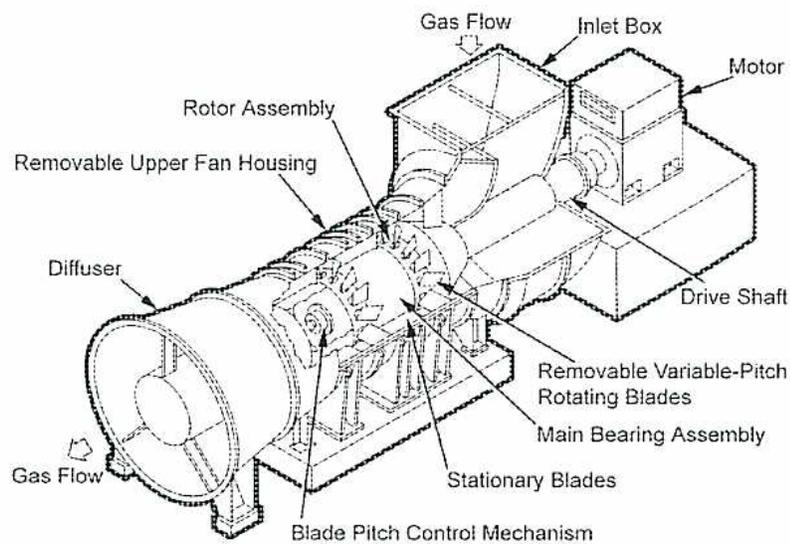
Figure 59
Axial Flow Fan
Figure 60
Axial Flow Fan Blades
Variable pitch fans are one of the preferred designs for F.D. fans because of their efficiency. Axial fans are subject to stall if they operate for extended periods beyond their performance curve. When this happens, the gas flow becomes turbulent, the fan is unstable, and severe vibration can occur damaging the fan.
Centrifugal Fans
Centrifugal fans are constructed similarly to centrifugal pumps, with an impellor or rotor containing blades and rotating them within a spiral or volute casing. They can be classified as having blade orientations that are either:
- • Straight or radial (Fig. 62)
- • Forward curved
- • Backward curved
At a given rotational speed, backward curved blades produce the lowest gas velocities and forward curved blades produce the highest gas velocities. This is shown in Fig. 61, which includes vector diagrams of the relative velocities. \( V_a \) is the air or gas velocity, \( V_b \) is the blade tip velocity, and \( V_{ab} \) is the air or gas velocity relative to the blade. \( V_b \) has the same value in each case.
![Figure 61: Fan Blade Orientation. The diagram shows two circular fan impellers. The left one is labeled 'Forward Curved' and shows blades curving in the direction of rotation. Above it is a vector triangle where the absolute velocity vector V_a is the longest side, resulting from the vector sum of blade tip velocity V_b and relative velocity V_ab. The right impeller is labeled 'Backwardly Curved' and shows blades curving away from the direction of rotation. Its corresponding vector triangle shows a much smaller absolute velocity V_a for the same V_b and V_ab magnitudes.](daa4a6fa7e2ba1954258f86b4928eb32_img.jpg)
Figure 61
Fan Blade Orientation
The cross sectional shape of the blade is also important in determining the fan's characteristics. Fig. 62 shows some typical examples.
![Figure 62: Fan Blade Shapes. Four cross-sectional diagrams of fan blades within a casing section. Top left: 'Backwardly Inclined Solid Blade' showing a flat blade angled back. Top right: 'Backwardly Inclined Airfoil' showing a thick, aerodynamic teardrop shape angled back. Bottom left: 'Radial Tip' showing a blade that starts curved and ends perpendicular to the outer circumference. Bottom right: 'Radial' showing a straight blade aligned with the radius of the impeller. Each diagram includes a curved arrow indicating clockwise rotation.](f0d1b18586b17005ffd3fce23280b5a5_img.jpg)
Figure 62
Fan Blade Shapes
The most important criteria in selecting blade configurations are efficiency and resistance to erosion. However, a compromise is always needed as improving efficiency lessens the erosion resistance. Radial airfoil fans are one of the preferred designs for F.D. fans because of their efficiency. I.D. Fans that are subject to dust erosion often have a modified radial or forward curved backward inclined design for longer life and less build up of dust. Fig. 63 shows a centrifugal fan rotor with airfoil blading.
Figure 63
Centrifugal Fan Rotor
Fig. 64 shows a centrifugal fan design with backward curved blades, with a double width rotor and double inlets. The double inlet design reduces axial thrust by having air enter at both ends.
Figure 64
Double Width Centrifugal Fan
Objective 9
Explain the methods which control furnace draft.
It is important that furnace draft be closely controlled. If the furnace pressure is allowed to rise above its design specification, there is a likelihood of flame, dust, and hot gas being blown outward from inspection doors and casing joints. This is a safety hazard to personnel, an environmental risk, and a housekeeping concern. Additionally, excessive furnace pressure reduces the velocity of the combustion gases, creating a loss of turbulence and a reduction in flame stability which can lead to loss of ignition and cause a furnace explosion. If the furnace pressure drops too low, there is a risk of furnace or ductwork failure, damaging equipment and exposing the people and equipment in the vicinity to large amounts of hot combustion gas.
Boiler I.D. fans are regulated to control furnace draft, and three types of final control elements can control their outputs:
- • Discharge dampers are sliding or pivoting blades, parallel to one another, that are positioned in the fan discharge duct to throttle the gas flow. This produces a significant pressure drop and an increase in the back pressure on the fan. Efficiency is reduced because the fan's power requirement is not reduced in proportion to the reduction in volumetric output. An advantage of this arrangement is its simple design which makes the dampers easy to control.
- • Inlet vanes are pivoting blades that are mounted radially around the axis of fan rotation at the inlet to the fan. They are positioned to throttle the gas flow that is available to the fan. The vanes impart a spin to the gas flow which reduces fan pressure and often reduces the power requirement. As flow is reduced, power usage is reduced even further and fan performance often improves. Control of the vanes with an automated control system and external positioner is slightly more difficult to accomplish than using discharge dampers. Fig. 65 shows a centrifugal fan with inlet vanes.
- • Fan speed control can be achieved with turbines, variable speed motors, two speed motors as the prime movers, or by fluid couplings. This approach provides excellent control and more efficient power usage than dampers or vanes but can be an expensive method to install initially.
- • If the fan is an axial flow type, it can be controlled by varying the pitch of its blades.
Figure 65
Centrifugal Fan with Inlet Vanes
The boiler control system can automatically control furnace draft directly using a single element control loop. Furnace draft is the process variable or control point. In a two element loop, airflow is added as a feed forward signal. Single element and two element control loops are illustrated in Fig. 66.
![Figure 66: Furnace Draft Control. This diagram shows two control loop configurations. The 'Single Element' loop on the left uses a Furnace Draft Transmitter to measure the draft, which is then processed by a controller (labeled with a delta symbol and %/s) set to a setpoint (SP). The controller output goes to a damper operator. The 'Two Element' loop on the right combines the Furnace Draft Transmitter output with a feedforward signal from an Airflow Transmitter. The draft signal is processed by a controller (delta symbol, %/s) with a setpoint (SP), and its output is summed (indicated by a sigma symbol) with the airflow signal before being sent to the damper operator.](a33da0f14e456f92539ce3e9b7d81f9a_img.jpg)
Figure 66
Furnace Draft Control
Chapter Questions
B2.6
- 1. Describe the factors that are considered when designing a steam generator furnace.
- 2. Where would you expect to find a separately fired superheater installed?
- 3. Describe and compare the different compositions of refractory and the forms in which refractory is used.
- 4. Describe a low NO x burner that is used for both gas and oil firing.
- 5. Sketch and describe a constant pressure spill return mechanical oil atomizer.
- 6. Describe the principle and design of a bowl type coal pulverizer.
- 7. Describe a wet bottom ash removal system for a coal-fired steam generator, including overflow and seal trough.
- 8. What affects the amount of slag formation in a coal fired furnace?
- 9. Describe the two main designs of furnace I.D. and F.D draft fans.
- 10. Describe and compare three ways in which steam generator draft fan output can be controlled.